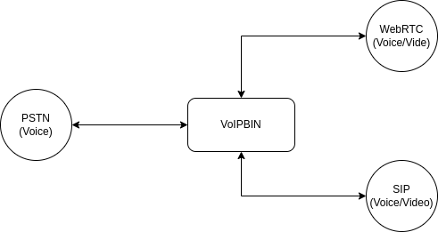

Call
Overview
The VoIPBIN call API provides a straightforward and convenient way to develop high-quality call applications in the Cloud. With the VoIPBIN API, developers can leverage familiar web technologies to build scalable and feature-rich call applications, giving them the power to control inbound and outbound call flows using JSON-based VoIPBIN actions. Additionally, the API offers capabilities to record and store inbound or outbound calls, create conference calls, and send text-to-speech messages in multiple languages with different gender and accents.
With the VoIPBIN API you can:
Build apps that scale with the web technologies you are already using.
Control the flow of inbound and outbound calls in JSON with VoIPBIN’s actions.
Record and store inbound or outbound calls.
Create conference calls.
Send text-to-speech messages in 50 languages with different gender and accents.
Protocol
VoIPBIN offers support for various call/video protocols, enabling users to join the same conference room and communicate with one another seamlessly. The flexibility in protocol options ensures efficient and reliable communication between different devices and platforms.
PSTN/Phone Number Format
In the VoIPBIN APIs, all PSTN/Phone numbers must adhere to the +E164 format. This format standardizes the representation of phone numbers to facilitate smooth communication and interoperability across different systems.
Key requirements for phone numbers within the VoIPBIN APIs:
The phone number must have the ‘+’ symbol at the beginning.
The number should not contain any special characters, such as spaces, parentheses, or hyphens.
For example, a US phone number should be represented as +16062067563, and a UK phone number should be represented as +442071234567.
Extension Number Format
The extension numbers used in the VoIPBIN system can be customized according to specific requirements. However, they must adhere to the following limitation:
Extension numbers should not contain any special characters, such as spaces, parentheses, or hyphens.
The absence of special characters ensures consistent and reliable processing of extension numbers within the VoIPBIN system, promoting smooth communication and interaction.
Call Lifecycle
Every call in VoIPBIN follows a predictable lifecycle from creation to termination. Understanding this lifecycle helps you build reliable applications that respond correctly to call state changes.
State Diagram
+--------------+
| dialing |
| (call starts)|
+------+-------+
|
+---------------------+---------------------+
| | |
v v v
+------------+ +------------+ +------------+
| ringing | | canceling | | hangup |
| (dest rang)| | (caller | | (failed) |
+-----+------+ | cancels) | +------------+
| +-----+------+
| |
v |
+-------------+ |
| progressing | |
| (answered) | |
+------+------+ |
| |
+--------+--------+ |
v v |
+------------+ +------------+ |
|terminating | | hangup | |
| (ending | | (remote | |
| locally) | | hangup) | |
+-----+------+ +------------+ |
| |
+--------------+---------------+
v
+------------+
| hangup |
| (final) |
+------------+
State Descriptions
Status |
What is happening |
|---|---|
dialing |
Call has been created. The system is attempting to reach the destination through the phone network. |
ringing |
The destination device is ringing. The person being called can now answer. |
progressing |
The call has been answered. Both parties can now hear each other. Media (audio/video) is flowing. |
terminating |
The system is ending the call. This happens when your application hangs up or a flow action ends the call. |
canceling |
The caller is canceling before the destination answered. Only happens for outgoing calls. |
hangup |
The call has ended. This is the final state - no further changes are possible. |
Key Behaviors
States only move forward, never backward. A call that reached “progressing” cannot go back to “ringing”.
Once a call reaches “hangup”, it cannot change anymore.
The “canceling” state only applies to outgoing calls (when the originator hangs up before answer).
What Happens At Each Stage
During Dialing
When you create an outbound call or receive an inbound call, the call enters the dialing state.
Your App VoIPBIN Destination
| | |
| POST /v1/calls | |
+-------------------------->| |
| | SIP INVITE |
| +--------------------------->|
| | |
| Call object | |
| status: "dialing" | |
|<--------------------------+ |
At this point:
VoIPBIN is trying to reach the destination
No audio is flowing yet
The call may fail if the network is unreachable
During Ringing
The destination device is ringing. The person can pick up the phone.
| | |
| | 180 Ringing |
| |<---------------------------+
| Webhook: call_updated | |
| status: "ringing" | Ring Ring |
|<--------------------------+ |
At this point:
The destination phone is ringing
Early media (ringback tone) may be playing
The caller is waiting for an answer
During Progressing (Answered)
The call has been answered. This is when real communication begins.
| | |
| | 200 OK |
| |<---------------------------+
| Webhook: call_updated | |
| status: "progressing" | <=====================> |
|<--------------------------+ (Audio flows) |
At this point:
Both parties can hear each other
Flow actions start executing (if defined)
Recording can begin
Media controls (hold, mute) become available
During Hangup
The call has ended. Check the hangup_by and hangup_reason fields to understand why.
| | |
| | BYE |
| |<---------------------------+
| Webhook: call_updated | |
| status: "hangup" | |
| hangup_by: "remote" | |
| hangup_reason: "normal" | |
|<--------------------------+ |
Understanding Hangup Reasons
When a call ends, VoIPBIN tells you why it ended. This helps you build appropriate responses for different scenarios.
Hangup Reason Values
Hangup By Values
Common Scenarios
Scenario: Normal conversation
----------------------------
hangup_by: "remote"
hangup_reason: "normal"
-> The other person hung up after talking
Scenario: Missed call
----------------------------
hangup_by: "remote"
hangup_reason: "noanswer"
-> Phone rang but nobody answered
Scenario: Your app ended the call
----------------------------
hangup_by: "local"
hangup_reason: "normal"
-> Your flow action or API call ended it
Scenario: Network problem
----------------------------
hangup_by: "remote"
hangup_reason: "failed"
-> Call never connected due to network issues
Media Control Operations
Once a call is in the “progressing” state (answered), you can control the audio in several ways. Each operation is independent - you can combine them as needed.
Hold
Pauses the call. The other party hears silence (or music if MOH is enabled).
Before Hold After Hold
+---------+ audio +---------+ +---------+ silence +---------+
| Caller | <============> | VoIPBIN | | Caller | ------------> | VoIPBIN |
+---------+ +---------+ +---------+ (or music) +---------+
Use hold when the caller needs to wait (e.g., while transferring)
The caller stays connected but cannot hear ongoing activity
Unhold resumes normal audio
Mute
Silences audio in one or both directions without putting the call on hold.
Mute "in" Mute "out" Mute "both"
+----+ ---X--> +----+ +----+ <--X--- +----+ +----+ --X-- +----+
| A | <------ | B | | A | -------> | B | | A | --X-- | B |
+----+ +----+ +----+ +----+ +----+ +----+
A cannot hear B A cannot be heard Complete silence
“in”: The call cannot hear incoming audio
“out”: The call’s audio is not sent to others
“both”: Complete silence in both directions
Recording
Captures the call audio for later playback.
+---------+ +---------+ +---------+
| Caller | <=====> | VoIPBIN | <=====> | Dest |
+---------+ +----+----+ +---------+
|
v (recording)
+---------+
| File |
+---------+
recording_id shows the current recording (if active)
recording_ids lists all recordings made during this call’s lifetime
You can start and stop recording multiple times in one call
Call Chaining
VoIPBIN’s call concept differs from traditional 1:1 calls. A single logical conversation may involve multiple call objects linked together.
The Two-Call Model
When you make a call from A to B through VoIPBIN, there are actually two separate calls:
Traditional View: A -----------------------> B
VoIPBIN Reality: A <--- Call 1 ---> VoIPBIN <--- Call 2 ---> B
| |
+------------------------+
(bridged audio)
Why Two Calls?
This design enables powerful features:
Recording: VoIPBIN can record both sides independently
Conferencing: Add more parties without changing the original calls
Transfer: Move calls between agents without dropping the caller
Flow Control: Run different actions on each call leg
Master and Chained Calls
When calls are related, they form a chain:
+-------------------------------------------------------+
| Master Call |
| master_call_id: 00000000-0000-0000-0000-000000000000 |
| chained_call_ids: [call-2-id, call-3-id] |
+-------------------------+-----------------------------+
|
+---------------+---------------+
v v v
+----------+ +----------+ +----------+
| Call 2 | | Call 3 | | Call 4 |
| master: | | master: | | master: |
| call-1-id| | call-1-id| | call-1-id|
+----------+ +----------+ +----------+
Chaining Behaviors
When the master call hangs up, all chained calls automatically hang up
Chained calls can only be added while the master is in dialing, ringing, or progressing state
Each chained call tracks its master via the master_call_id field
Common Use Case: Transfer
Step 1: Caller and Agent talking
+--------+ +---------+ +--------+
| Caller |<----->| VoIPBIN |<----->| Agent |
+--------+ +----+----+ +--------+
|
Master Call
Step 2: Agent initiates transfer to Supervisor
+--------+ +---------+ +--------+
| Caller |<----->| VoIPBIN | | Agent | (on hold)
+--------+ +----+----+ +--------+
|
+-----------> +------------+
| | Supervisor | (ringing)
Chained Call +------------+
Step 3: Supervisor answers, Agent drops
+--------+ +---------+ +------------+
| Caller |<----->| VoIPBIN |<----->| Supervisor |
+--------+ +---------+ +------------+
Multi-Party Chaining (3+ Parties)
Call chaining supports more than two parties. Each chained call connects to the master:
+--------+ +---------+ +---------+
| Caller |<----->| VoIPBIN |<----->| Agent 1 |
+--------+ +----+----+ +---------+
|
+------------>+---------+
| | Agent 2 |
| +---------+
|
+------------>+------------+
| Supervisor |
+------------+
Master: Caller's call
Chained: Agent 1, Agent 2, Supervisor (all linked to master)
Chaining vs Conference Decision Guide
Need multiple parties?
|
+------------+------------+
| |
Sequential? Simultaneous?
(one at a time) (all at once)
| |
+-----+-----+ +-----+-----+
| | | |
Yes No Yes No
| | | |
v | v |
[Chaining] | [Conference] |
| |
Need transfers? |
| |
+-----+-----+ |
| | |
Yes No |
| +-------------------+
v |
[Chaining] v
[Conference]
Aspect |
Call Chaining |
Conference |
|---|---|---|
Parties |
Sequential (transfer model) |
Simultaneous (meeting model) |
Audio |
Bridged between pairs |
Mixed for all participants |
Master Control |
Master hangup ends all |
Host controls conference |
Best For |
Transfers, escalation, queues |
Meetings, group calls |
Timestamps Explained
Each call tracks important moments in its lifecycle:
Timeline of a successful call:
| tm_create tm_ringing tm_progressing tm_hangup
| | | | |
v v v v v
------o----------------------------o--------------------o--------------------------o------>
| | | |
|<--- dialing -------------->|<--- ringing ------>|<---- progressing ------->|
| | | |
Call created Phone started Call answered Call ended
ringing
Timestamp |
When it’s set |
|---|---|
tm_create |
When the call object was created in VoIPBIN |
tm_ringing |
When the destination phone started ringing |
tm_progressing |
When the call was answered |
tm_hangup |
When the call ended |
tm_update |
Last time any call property changed |
Calculating Durations
Ring duration = tm_progressing - tm_ringing
Talk duration = tm_hangup - tm_progressing
Total duration = tm_hangup - tm_create
Route Failover
When an outgoing call fails during dialing or ringing, VoIPBIN can automatically try alternate routes.
+-----------------------------------------------------------------+
| Call Attempt Flow |
+-----------------------------------------------------------------+
Create Call
|
v
+--------------+
| Route 1 |
| (Primary) |
+------+-------+
|
+-------+-------+
v v
Connected? Failed?
| |
v v
Success +--------------+
| Route 2 |
| (Backup) |
+------+-------+
|
+-------+-------+
v v
Connected? Failed?
| |
v v
Success +--------------+
| Route 3 |
| (Last try) |
+------+-------+
|
v
Final Result
Failover Rules
Not all failures trigger failover. VoIPBIN only tries the next route when recovery is possible:
Hangup Reason |
Failover |
Why |
|---|---|---|
failed |
Yes |
Network issue - another route might work |
busy |
No |
The person is busy - trying again won’t help |
noanswer |
No |
They didn’t answer - their choice |
cancel |
No |
Caller cancelled - no need to retry |
normal |
No |
Call succeeded - nothing to retry |
No Failover Cases
Failover is disabled in these situations:
Incoming calls (the route is fixed by the caller)
Conference calls
Calls where flow execution already started (early_execution flag)
Incoming call
The VoIPBIN system provides the functionality to receive incoming calls from external parties. This feature allows users to accept and handle incoming calls through their VoIP services. Incoming calls are crucial for various communication applications and call center setups as they enable users to receive inquiries, provide support, and engage with customers, clients, or other users. When an incoming call is received, the VoIPBIN system processes the call request and prepares for call handling based on the specified parameters and configurations.
Execution of Call Flow for incoming call
The execution of the call flow for incoming calls involves a simple yet effective sequence of actions:
External Caller VoIPBIN Your Flow
| | |
| INVITE (call request) | |
+-------------------------->| |
| | Lookup destination |
| | Find matching flow |
| | |
| 100 Trying | |
|<--------------------------+ |
| | Execute flow actions |
| +-------------------------->|
| 180 Ringing / 200 OK | |
|<--------------------------+<--------------------------+
| | |
Call Verification: When an incoming call is received, the VoIPBIN system verifies the call’s authenticity and checks for any potential security risks, such as spoofed or fraudulent calls. This verification process ensures that legitimate calls are allowed to proceed.
Determine Call Flow: After successful verification, the system determines the appropriate call flow based on the destination of the incoming call. The call flow includes a set of predefined actions and configurations tailored to handle calls directed to a specific user, department, or interactive voice response (IVR) system.
Execute Call Flow: Once the call flow is determined, the system proceeds to execute it without delay. The call flow actions are triggered in accordance with the predefined configuration for the call destination.
End the Call: After executing the call flow actions, the system initiates the process of ending the call. The call is terminated, and the connection with the external party is disconnected.
By following this streamlined call flow process, the VoIPBIN system efficiently handles incoming calls, ensures their secure and verified handling, and executes the appropriate flow actions based on the call destination. After executing the call flow, the system promptly ends the call, completing the call handling process for the incoming call. Customizable flow actions allow users to tailor the call handling process according to their application’s needs, optimizing user experience and call management efficiency.

Outgoing call
The VoIPBIN system offers the outgoing call feature, enabling users to initiate calls to external parties through their VoIP services. This feature is commonly used in various communication applications and call center setups to establish connections with customers, clients, or other users outside the organization. To utilize the outgoing call feature, users need to provide the necessary call parameters, such as the destination phone number, caller ID information, and any additional call settings. These parameters are submitted to the VoIPBIN system, which then processes the request and attempts to establish a connection with the specified destination.
Execution of Call Flow for outgoing call
Once the outgoing call request is initiated, the VoIPBIN system starts the process of connecting to the destination phone number. During this phase, the system waits for the called party to answer the call. The call flow refers to the sequence of actions and events that occur from the moment the call is initiated until it is successfully answered or terminated.
Your Application VoIPBIN Destination
| | |
| POST /v1/calls | |
| (with flow actions) | |
+-------------------------->| |
| | INVITE |
| +-------------------------->|
| Call created | |
| status: "dialing" | 180 Ringing |
|<--------------------------+<--------------------------+
| | |
| Webhook: "ringing" | 200 OK (answered) |
|<--------------------------+<--------------------------+
| | |
| Webhook: "progressing" | <=====================> |
|<--------------------------+ Execute flow actions |
| | |
The call flow execution occurs as follows:
Initiation: The user triggers the outgoing call request, providing the necessary call parameters.
Call Setup: The VoIPBIN system processes the request and establishes a connection with the destination phone number.
Wait for Call Answer: After the call setup, the system waits for the called party to answer the call. This waiting period involves ringing the called party’s phone and monitoring the call status.
Call Answered: Once the called party answers the outgoing call, the system proceeds to execute the predefined call flow actions.
Flow Actions Execution: The call flow actions are a set of customizable operations that are executed upon call answer. These actions can include call recording, call routing, call analytics, notifications, and post-call actions, among others.
The call flow execution is critical for ensuring a smooth and efficient communication experience. By customizing the flow actions, users can tailor the call handling process to meet the specific requirements of their application or service, enhancing user engagement and overall call management.

Error handling and Termination
During the incoming/outgoing call process, various errors may occur, such as call failures or network issues. The VoIPBIN system have robust error handling mechanisms to gracefully manage such situations. In case of a failed call attempt or call rejection, the system log relevant information for further analysis or reporting purposes.
Common Error Scenarios
Call concept
The concept of a call in VoIPBIN departs from the traditional 1:1 call model. Here’s an overview:
In VoIPBIN, a call includes source, destination, and additional metadata. Moreover, the call can be associated with multiple other calls, creating a dynamic journey that goes beyond the standard 1:1 connection. Envision a call’s trajectory as it connects to an agent and then diverges to another destination.
In VoIPBIN, the conventional call scenario A -> B is delineated by two distinct calls:
A VoIPBIN B
|<-- Call 1 --->| |
| |<--- Call 2 -->|
|<-----RTP----->|<-----RTP----->|
Comparison: Traditional Call Concept vs VoIPBIN Call Concept
Traditional Call Concept
Follows a 1:1 model where a call is a direct connection between a source and a destination.
Typically involves a straightforward flow from the caller to the recipient.
Limited in handling complex call journeys or interactions with multiple parties.
VoIPBIN Call Concept
Deviates from the traditional 1:1 model, allowing for more intricate call structures.
Encompasses source, destination, and additional metadata in a call.
Permits connections to multiple other calls, creating dynamic call journeys.
Visualizes a call’s path, which may involve connecting to an agent and branching to additional destinations.
In summary, while the traditional call concept adheres to a simple point-to-point model, the VoIPBIN call concept introduces a more flexible and multifaceted approach, accommodating diverse call scenarios and interactions.
Transfer
CPaaS, or Communications Platform as a Service, is a cloud-based technology that allows developers to add real-time communication features to their applications, such as voice and messaging capabilities. Call transfer is a common feature in CPaaS that allows an ongoing phone call to be transferred from one person to another, or from one device to another, without disrupting the conversation.
There are two main types of call transfer in CPaaS: blind transfer and attended transfer.
In both types of call transfer, the transfer can be done manually by the person initiating the transfer, or it can be automated using CPaaS software. Automated transfer is typically done using rules-based routing, which determines the appropriate person or device to transfer the call to based on predefined rules or criteria.
Call transfer is just one of many features available in CPaaS technology, which can help improve call handling, reduce call times, and improve overall customer service.
Blind Transfer
Blind transfer is the simplest type of call transfer. In this type of transfer, the person initiating the transfer simply transfers the call to another person or phone number without first speaking to them. This is useful when the person receiving the call is known to be available and ready to take the call. Blind transfer is commonly used in call center environments where a caller needs to be routed to the appropriate agent or department.
Caller VoIPBIN Transferer Transferee
| | | |
| Call in | Call in | |
| progress | progress | |
|<---------------->|<-------------->| |
| | | |
| | Send transfer | |
| | Request | |
| |<---------------| |
| | | |
| | Dial | |
| |-------------------------------->|
| | | |
| Ring | | |
|<-----------------| | |
| | | |
| | Hangup | |
| |--------------->| |
| | | |
| | | Answer |
| |<--------------------------------|
| | | |
| Stop ring | | |
|<-----------------| | |
The Caller initiates a call to the VoIPBIN and the call is in progress.
The Transferer, who is already on a call, decides to transfer the Caller to the Transferee.
The Transferer sends a transfer request to the VoIPBIN, indicating the Transferee’s number.
The VoIPBIN dials to the Transferee.
The VoIPBIN hangs up the transferer right after dials to the transferee.
The Transferee answers the call and is connected to the Caller.
This is the basic process of an blind transfer using a CPaaS like VoIPBIN.
Attended Transfer
Attended transfer, also known as consultative transfer, involves the person initiating the transfer first speaking to the person who will be taking the call. This allows the person initiating the transfer to provide context or information about the caller or the reason for the transfer. Once the person who will be taking the call is ready, the transfer is initiated and the original caller is connected to the new person or device. Attended transfer is commonly used in situations where the person receiving the call may need more information before taking the call, such as when transferring a call to a supervisor or manager.
Caller VoIPBIN Transferer Transferee
| | | |
| Call in | Call in | |
| progress | progress | |
|<---------------->|<-------------->| |
| | | |
| | Send transfer | |
| | Request | |
| |<---------------| |
| | | |
| | Dial | |
| |-------------------------------->|
| | | |
| MOH/Mute | | |
|<-----------------| | |
| | | |
| | | Answer |
| |<--------------------------------|
| | | |
| | Call in | |
| | progress | |
| |<-------------->| |
| | | |
| | | Call in |
| | | progress |
| |<------------------------------->|
| | | |
| | Hangup | |
| |<---------------| |
| | | |
| MOH off/Unmute | | |
|<-----------------| | |
| | | |
| Call in | | |
| progress | | |
|<---------------->| | |
The Caller initiates a call to the VoIPBIN, and the call is in progress with transferer.
The Transferer, who is already on a call, decides to transfer the Caller to the Transferee.
The Transferer sends a transfer request to the VoIPBIN, indicating the Transferee’s number.
The VoIPBIN dials to the Transferee.
The VoIPBIN puts the Caller on music on hold and mute.
The Transferee answers the call and is connected to the Transferer and talk to each other.
The Transferer drops out of the call.
The VoIPBIN turn off the Caller’s Music on hold and the Caller and Transferee can now hear each other.
This is the basic process of an attended transfer using a CPaaS like VoIPBIN. It allows for seamless communication between parties and can help businesses manage their incoming calls more efficiently.
Groupcall
The Groupcall feature in VoIPBIN is a blast calling functionality that enables team members to communicate in real-time. When a Group Call is initiated, an alert is sent to all team members, allowing them to join the call with a single click. The feature uses VoIP technology to enable high-quality audio communication and offers benefits such as increased productivity, improved collaboration, and enhanced connectivity.
Ringall
Ringall send the dial request to the all of destinations.
The ringall ring method is a way to make calls to multiple destinations simultaneously. When you initiate a groupcall using the ringall method, VoIPBIN will place calls to all of the destinations on your list at once. This means that each destination’s phone will start ringing simultaneously, and the person who answers first will begin executing the call flow specified for that groupcall, while all other destinations that have not yet been answered will be hung up immediately. This ensures that only one call is active at a time and the call flow is executed by the person who answered first.
Client VoIPBIN Destination-1 Destination-2
| | | |
| Groupcall | | |
| request | | |
|----------------->| | |
| | | |
| | Dial | |
| |--------------->| |
| | | |
| | Dial | |
| |-------------------------------->|
| | | |
| | | Answer |
| |<--------------------------------|
| | | |
| | Cancel | |
| |--------------->| |
The diagram shows the sequence of events for a Group Call request in VoIPBIN with two destination endpoints, Destination-1 and Destination-2. * The Client initiates the Group Call request by sending a request message to the VoIPBIN server. * The server then sends a Dial message to Destination-1 and Destination-2 to establish the call. * After Destination-2 answers the call, it sends an Answer message back to the server. * The VoIPBIN cancels the call to Destination-1 by sending a Cancel message to Destination-1.
Linear
The linear ring method is a way to call a list of destinations one by one, in a specific order.
When you initiate a groupcall using the linear method, VoIPBIN will call the first destination on your list. If that destination does not answer, VoIPBIN will move on to the next destination on the list and call it instead. This process will continue until one of the destinations answers the call, at which point the call flow specified for the groupcall will be executed. If all of the destinations on the list have been called and none of them have answered, the call will end without any further action.
The linear method is useful when you want to call a list of destinations in a specific order and don’t want to simultaneously ring all destinations at once.
For example, you might use the linear method for a sales team to call potential clients one by one, in a specific order based on priority.
groupcall1 destinationA destinationB destinationC
|----- ring ---------->| | |
|<---- no answer ------| | |
| | | |
|----- ring ------------------------------>| |
|<---- no answer --------------------------| |
| | | |
|----- ring -------------------------------------------------->|
|<---- answer -------------------------------------------------|
Nested groupcall
A nested groupcall is a groupcall that is included as one of the destinations in another groupcall. When a groupcall with a nested groupcall is initiated, the nested groupcall is also initiated, creating a “nested” groupcall within the main groupcall.
For example, let’s say you have a groupcall with the following list of destinations: Destination A, Destination B, and Destination C. Destination C is a nested groupcall that includes its own list of destinations: Destination X and Destination Y.
When you initiate the main groupcall, VoIPBIN will begin calling Destination A and Destination B simultaneously according to the ring method you’ve specified (either ringall or linear). When it reaches Destination C, the nested groupcall is initiated and VoIPBIN will begin calling Destination X and Destination Y according to the ring method specified in the nested groupcall.
Once a destination in the nested groupcall has answered the call, the flow specified for that groupcall is executed. The child groupcall informs the master groupcall that it has answered call. The master groupcall then hangs up any remaining calls that have not yet been answered in the child groupcall, and stops calling the remaining destinations in the main groupcall list.
In VoIPBIN, the main groupcall is considered the “master” groupcall and the nested groupcall is considered a “chained” groupcall. Each chained groupcall is assigned a unique ID, and the IDs of all chained groupcalls are stored in a list within the master groupcall. This allows VoIPBIN to keep track of all nested groupcalls and their current status within the main call.
It is also possible to have chained groupcalls within chained groupcalls, creating multiple levels of nesting. This means that a nested groupcall can itself include another groupcall as one of its destinations, forming a chain of groupcalls. The nested groupcalls can continue to be chained in a cascading manner, allowing for complex call flows and routing scenarios.
For example, the main groupcall may include a chained groupcall as one of its destinations, and that chained groupcall may, in turn, include another chained groupcall within it. This nesting can extend to multiple levels, providing a highly flexible and customizable approach to call routing and management.
By allowing nested and chained groupcalls, VoIPBIN empowers users to design and implement intricate call flows that cater to their specific needs. This functionality opens up possibilities for applications such as multi-level call routing, call forwarding to different departments or teams, and advanced call handling scenarios.
The ability to include nested groupcalls within a main groupcall is a powerful feature that allows for more complex call flows and routing strategies. It can be used, for example, to create more sophisticated call routing trees that can handle a wide range of call scenarios and use cases.
groupcall1 destinationA destinationB destinationC
|----- ring ---------->| | (groupcall destination linear)
|----- ring ------------------------------>| | groupcall2 destinationX destinationY
|----- ring -------------------------------------------------->|-- start a nested groupcall-->| | |
| | | |----- ring ----->| |
| | | |<-- no answer ---| |
| | | |----- ring ------------------------->|
| | | |<-- answer --------------------------|
|<---------------------------------------- inform that groupcall2 got answered call ----------|
|----- cancel -------->| |
|----- cancel ---------------------------->|
Struct Call
Call
{
"id": "<string>",
"flow_id": "<string>",
"type": "<string>",
"master_call_id": "<string>",
"chained_call_ids": [
"<string>",
...
],
"recording_id": "<string>",
"recording_ids": [
"<string>",
...
],
"source": {
...
},
"destination": {
...
},
"status": "<string>",
"action": {
...
},
"direction": "<string>",
"hangup_by": "<string>",
"hangup_reason": "<string>",
"tm_create": "<string>",
"tm_update": "<string>",
"tm_progressing": "<string>",
"tm_ringing": "<string>",
"tm_hangup": "<string>"
}
id: Call’s ID.
flow_id: Call’s flow id.
type: Call’s type. See detail here.
master_call_id: Master call’s id. If the master_call_id set, it follows master call’s hangup.
chained_call_ids: List of chained call ids. If the call hangs up, the chained call also will hangup.
recording_id: Shows currently recording id.
recording_ids: List of recording ids.
source: Source address info. See detail here.
destination: Destination address info. See detail here.
status: Call’s status. See detail here.
action: Call’s current action. See detail here.
direction: Call’s direction. See detail here.
hangup_by: Shows call’s hangup end. See detail here.
hangup_reason: Show call’s hangup reason. See detail here.
Example
{
"id": "d9d32881-12fd-4b19-a6b2-6d5b6b6acf76",
"flow_id": "4553c074-c88d-49e5-9d47-5c01598ac099",
"type": "flow",
"master_call_id": "00000000-0000-0000-0000-000000000000",
"chained_call_ids": [],
"recording_id": "00000000-0000-0000-0000-000000000000",
"recording_ids": [],
"source": {
"type": "tel",
"target": "+15551234567",
"target_name": "",
"name": "",
"detail": ""
},
"destination": {
"type": "tel",
"target": "+15559876543",
"target_name": "",
"name": "",
"detail": ""
},
"status": "hangup",
"action": {
"id": "0db08d32-b7d7-470d-8bda-9feff0877077",
"next_id": "00000000-0000-0000-0000-000000000000",
"type": "talk",
"option": {
"text": "Hello. Thank you for calling. How can I help you today?",
"gender": "female",
"language": "en-US"
},
"tm_execute": "2022-05-01 15:10:38.785510878"
},
"direction": "outgoing",
"hangup_by": "local",
"hangup_reason": "normal",
"tm_create": "2022-05-01 15:10:23.414798",
"tm_update": "2022-05-01 15:10:44.781000",
"tm_progressing": "2022-05-01 15:10:38.721000",
"tm_ringing": "2022-05-01 15:10:26.978000",
"tm_hangup": "2022-05-01 15:10:44.781000"
}
Type
Call’s type.
Type |
Description |
|---|---|
flow |
Executing the call-flow |
conference |
Conference call. |
sip-service |
sip-service call. Will execute the corresponding the pre-defined sip-service by the destination. |
Status
Call’s status.
Status |
Description |
|---|---|
dialing |
The call is created. We are dialing to the destination. |
ringing |
The destination has confirmed that the call is ringng. |
progressing |
The call has answered. The both endpoints are talking to each other. |
terminating |
The call is terminating. |
canceling |
The call originator is canceling the call. |
hangup |
The call has been completed. |
state diagram

Direction
Call’s direction.
Direction |
Description |
|---|---|
incoming |
The call was coming from the outside of VoIPBIN. |
outgoing |
The call was generated by VoIPBIN. |
Hangup by
The Hangup by shows which endpoint sent the hangup request first.
hangup by |
Description |
|---|---|
remote |
The remote end hangup the call first. |
local |
The local end hangup the call first. |
Hangup reason
Shows why the call was hungup.
Reason |
Description |
|---|---|
normal |
The call has ended after answer. |
failed |
The call attempt(signal) was not reached to the phone network. |
busy |
The destination is on the line with another caller. |
cancel |
Call was cancelled by the originator before it was answered. |
timeout |
Call reached max call duration after it was answered. |
noanswer |
Destination didn’t answer until destination’s timeout. |
dialout |
The call reached dialing timeout before it was answered. This timeout is fired by our time out(outgoing call). |
amd |
Hangup caused by the action type amd. The call’s amd action result hung up the call. |
Struct Groupcall
Groupcall
{
"id": "<string>",
"customer_id": "<string>",
"source": {
...
},
"destinations": [
{
...
},
...
],
"ring_method": "<string>",
"answer_method": "<string>",
"answer_call_id": "<string>",
"call_ids": [
"<string>",
...
],
"tm_create": "<string>",
"tm_update": "<string>",
"tm_delete": "<string>"
}
id: Groupcall’s ID.
customer_id: Customer’s ID
source: Source address info. See detail here.
destinations: List of destination addresses info. See detail here.
ring_method: Ring method. See detail here
answer_method: Answering method. See detail here
answer_call_id: Represents answered call id.
call_ids: List of created call ids.
Example
{
"id": "d8596b14-4d8e-4a86-afde-642b46d59ac7",
"customer_id": "5e4a0680-804e-11ec-8477-2fea5968d85b",
"source": {
"type": "tel",
"target": "+15551234567",
"target_name": "",
"name": "",
"detail": ""
},
"destinations": [
{
"type": "endpoint",
"target": "test11@test",
"target_name": "",
"name": "",
"detail": ""
},
{
"type": "endpoint",
"target": "test12@test",
"target_name": "",
"name": "",
"detail": ""
}
],
"ring_method": "",
"answer_method": "",
"answer_call_id": "00000000-0000-0000-0000-000000000000",
"call_ids": [
"3c77eb43-2098-4890-bb6c-5af0707ba4a6"
],
"tm_create": "2023-04-21 15:33:28.569053",
"tm_update": "9999-01-01 00:00:00.000000",
"tm_delete": "9999-01-01 00:00:00.000000"
}
Ring method
Groupcall’s ringing method.
Type |
Description |
|---|---|
ring_all |
Make a call to the all destinations at once. |
linear |
Make a call to the destination one-by-one in a linear. |
Answer method
Call’s status.
Type |
Description |
|---|---|
hangup_others |
Hang up the other calls. |
Tutorial
Simple outbound call with TTS
Making an outbound call with TTS(Text-to-Speech) action. When the destination answer the call, it will speak the given text message.
$ curl --location --request POST 'https://api.voipbin.net/v1.0/calls?token=<YOUR_AUTH_TOKEN>' \
--header 'Content-Type: application/json' \
--data-raw '{
"source": {
"type": "tel",
"target": "+15551234567"
},
"destinations": [
{
"type": "tel",
"target": "+15559876543"
}
],
"actions": [
{
"type": "talk",
"option": {
"text": "hello. welcome to voipbin. This is test message. This audio file is generated dynamically by the tts module. Please enjoy the voipbin service. Thank you. Bye",
"gender": "female",
"language": "en-US"
}
}
]
}'
Simple outbound call with media file play
Making an outbound call with media file play action. When the destination answer the call, it will play the given media file.
$ curl --location --request POST 'https://api.voipbin.net/v1.0/calls?token=<YOUR_AUTH_TOKEN>' \
--header 'Content-Type: application/json' \
--data-raw '{
"source": {
"type": "tel",
"target": "+15551234567"
},
"destinations": [
{
"type": "tel",
"target": "+15559876543"
}
],
"actions": [
{
"type": "play",
"option": {
"stream_urls": [
"https://github.com/pchero/asterisk-medias/raw/master/samples_codec/pcm_samples/example-mono_16bit_8khz_pcm.wav"
]
}
}
]
}'
[
{
"id": "a023bfa8-1091-4e94-8eaa-7f01fbecc71a",
"user_id": 1,
"flow_id": "f089791a-ac78-4ea0-be88-8a8e131f9fc5",
"conf_id": "00000000-0000-0000-0000-000000000000",
"type": "flow",
"master_call_id": "00000000-0000-0000-0000-000000000000",
"chained_call_ids": [],
"recording_id": "00000000-0000-0000-0000-000000000000",
"recording_ids": [],
"source": {
"type": "tel",
"target": "+15551234567",
"name": ""
},
"destination": {
"type": "tel",
"target": "+15559876543",
"name": ""
},
"status": "dialing",
"direction": "outgoing",
"hangup_by": "",
"hangup_reason": "",
"tm_create": "2021-02-04 04:44:20.904662",
"tm_update": "",
"tm_progressing": "",
"tm_ringing": "",
"tm_hangup": ""
}
]
Simple outbound call with TTS and connect
Making an outbound call with TTS(Text-to-Speech) and connect to other destination.
$ curl -k --location --request POST 'https://api.voipbin.net/v1.0/calls?token=<YOUR_AUTH_TOKEN>' \
--header 'Content-Type: application/json' \
--header 'Cookie: token=<YOUR_AUTH_TOKEN>' \
--data-raw '{
"source": {
"type": "tel",
"target": "+15559876543"
},
"destinations": [
{
"type": "tel",
"target": "+15559876543"
}
],
"actions": [
{
"type": "talk",
"option": {
"text": "hello. welcome to voipbin. This is test message. This audio file is generated dynamically by the tts module. Please enjoy the voipbin service.",
"gender": "female",
"language": "en-US"
}
},
{
"type": "connect",
"option": {
"source": {
"type": "tel",
"target": "+15559876543"
},
"destinations": [
{
"type": "tel",
"target": "+15551111111"
}
]
}
}
]
}'
[
{
"id": "9f6265bc-6b59-4e80-a906-2679aca11455",
"user_id": 1,
"flow_id": "d665fbc0-6dd8-44bc-99ea-2ae54bc59428",
"conf_id": "00000000-0000-0000-0000-000000000000",
"type": "flow",
"master_call_id": "00000000-0000-0000-0000-000000000000",
"chained_call_ids": [],
"recording_id": "00000000-0000-0000-0000-000000000000",
"recording_ids": [],
"source": {
"type": "tel",
"target": "+15559876543",
"name": ""
},
"destination": {
"type": "tel",
"target": "+15559876543",
"name": ""
},
"status": "dialing",
"direction": "outgoing",
"hangup_by": "",
"hangup_reason": "",
"tm_create": "2021-02-06 09:52:49.941865",
"tm_update": "",
"tm_progressing": "",
"tm_ringing": "",
"tm_hangup": ""
}
]
Simple outbound call with talk and digits_send
Making an outbound call. After answer the call, it will play the TTS and then send the DTMFs.
{
"source": {
"type": "tel",
"target": "+15551234567"
},
"destinations": [
{
"type": "tel",
"target": "+15559876543"
}
],
"actions": [
{
"type": "talk",
"option": {
"text": "This is dtmf send test call. Please wait.",
"gender": "female",
"language": "en-US"
}
},
{
"type": "dtmf_send",
"option": {
"dtmfs": "1234567890",
"duration": 500,
"interval": 500
}
},
{
"type": "talk",
"option": {
"text": "Thank you. DTMF send test has done.",
"gender": "female",
"language": "en-US"
}
}
]
}
[
{
"id": "d7520a58-0b07-4dd7-ab72-a4e2d1979ec0",
"user_id": 1,
"flow_id": "0f4bd9bc-9df5-4a5b-9465-2189822a3019",
"conf_id": "00000000-0000-0000-0000-000000000000",
"type": "flow",
"master_call_id": "00000000-0000-0000-0000-000000000000",
"chained_call_ids": [],
"recording_id": "00000000-0000-0000-0000-000000000000",
"recording_ids": [],
"source": {
"type": "tel",
"target": "+15551234567",
"name": ""
},
"destination": {
"type": "tel",
"target": "+15559876543",
"name": ""
},
"status": "dialing",
"direction": "outgoing",
"hangup_by": "",
"hangup_reason": "",
"tm_create": "2021-02-08 03:59:33.281711",
"tm_update": "",
"tm_progressing": "",
"tm_ringing": "",
"tm_hangup": ""
}
]
Simple outbound call with Branch
Making an outbound call with brach. It will get the digits from the call and will execute the branch.
Start
|
|
------------> Talk("Press 1 for show must go on. Press 2 for bohemian rhapsody. Press 3 for another one bites the dust")
| |
| |
| Digit(DTMF) receive
| |
| |
| -----------------------------------------------
| | | | |
| default "1" "2" "3"
| | | | |
| | | | |
| | Talk(...) Talk(...) Talk(...)
| | | | |
| | | | |
| | Hangup Hangup Hangup
| |
| |
| Talk(...)
| |
----goto(loop 2 times)
|
|
Talk(...)
|
|
Hangup
$ curl --location --request POST 'https://api.voipbin.net/v1.0/calls?token=<YOUR_AUTH_TOKEN>' \
--header 'Content-Type: application/json' \
--header 'Cookie: token=<YOUR_AUTH_TOKEN>' \
--data-raw '{
"source": {
"type": "tel",
"target": "+15551234567"
},
"destinations": [
{
"type": "tel",
"target": "+15559876543"
}
],
"actions": [
{
"id": "b8781e56-c524-11ec-889f-d37b0dbb7eb8",
"type": "talk",
"option": {
"text": "Hello. This is branch test. Press 1 for show must go on. Press 2 for bohemian rhapsody. Press 3 for another one bites the dust",
"gender": "female",
"language": "en-US"
}
},
{
"type": "digits_receive",
"option": {
"duration": 5000,
"length": 1
}
},
{
"type": "branch",
"option": {
"default_target_id": "ed9705ca-c524-11ec-a3fb-8feb7731ad45",
"target_ids": {
"1": "c3eb8e62-c524-11ec-94c5-abafec8af561",
"2": "dc87123e-c524-11ec-89c6-5fb18da14034",
"3": "e70fb030-c524-11ec-b657-ebec72f097ef"
}
}
},
{
"id": "c3eb8e62-c524-11ec-94c5-abafec8af561",
"type": "talk",
"option": {
"text": "Empty spaces, what are we living for? Abandoned places, I guess we know the score, on and on. Does anybody know what we are looking for? Another hero, another mindless crime. Behind the curtain, in the pantomime",
"gender": "female",
"language": "en-US"
}
},
{
"type": "hangup"
},
{
"id": "dc87123e-c524-11ec-89c6-5fb18da14034",
"type": "talk",
"option": {
"text": "Mama, Just killed a man. Put a gun against his head, pulled my trigger. Now he'\''s dead. Mama, life had just begun, But now I'\''ve gone and thrown it all away.",
"gender": "female",
"language": "en-US"
}
},
{
"type": "hangup"
},
{
"id": "e70fb030-c524-11ec-b657-ebec72f097ef",
"type": "talk",
"option": {
"text": "Steve walks warily down the street. With his brim pulled way down low. Ain'\''t no sound but the sound of his feet. Machine guns ready to go. Are you ready hey are you ready for this?",
"gender": "female",
"language": "en-US"
}
},
{
"type": "hangup"
},
{
"id": "ed9705ca-c524-11ec-a3fb-8feb7731ad45",
"type": "talk",
"option": {
"text": "You didn'\''t choice correct number. Default selected.",
"gender": "female",
"language": "en-US"
}
},
{
"type": "goto",
"option": {
"target_id": "b8781e56-c524-11ec-889f-d37b0dbb7eb8",
"loop_count": 2
}
},
{
"type": "talk",
"option": {
"text": "Loop over. Hangup the call. Thank you, good bye.",
"gender": "female",
"language": "en-US"
}
},
{
"type": "hangup"
}
]
}'
[
{
"id": "77517719-ffb9-4583-ba44-737ba991d685",
"flow_id": "c0827e56-41ef-4fa1-9da0-a8a36fbb76c4",
"confbridge_id": "00000000-0000-0000-0000-000000000000",
"type": "flow",
"master_call_id": "00000000-0000-0000-0000-000000000000",
"chained_call_ids": [],
"recording_id": "00000000-0000-0000-0000-000000000000",
"recording_ids": [],
"source": {
"type": "tel",
"target": "+15551234567",
"target_name": "",
"name": "",
"detail": ""
},
"destination": {
"type": "tel",
"target": "+15559876543",
"target_name": "",
"name": "",
"detail": ""
},
"status": "dialing",
"action": {
"id": "00000000-0000-0000-0000-000000000001",
"type": ""
},
"direction": "outgoing",
"hangup_by": "",
"hangup_reason": "",
"tm_create": "2022-02-24 02:08:14.469405",
"tm_update": "9999-01-01 00:00:00.000000",
"tm_progressing": "9999-01-01 00:00:00.000000",
"tm_ringing": "9999-01-01 00:00:00.000000",
"tm_hangup": "9999-01-01 00:00:00.000000"
}
]
Get call list
Getting a list of calls.
$ curl -k --location --request GET 'https://api.voipbin.net/v1.0/calls?token=<YOUR_AUTH_TOKEN>'
{
"result": [
{
"id": "9a7857ca-73ba-4000-8101-c47d3b48f9d1",
"user_id": 1,
"flow_id": "00000000-0000-0000-0000-000000000000",
"conf_id": "00000000-0000-0000-0000-000000000000",
"type": "sip-service",
"master_call_id": "00000000-0000-0000-0000-000000000000",
"chained_call_ids": [],
"recording_id": "00000000-0000-0000-0000-000000000000",
"recording_ids": [],
"source": {
"type": "tel",
"target": "109",
"name": "109"
},
"destination": {
"type": "tel",
"target": "972595897084",
"name": ""
},
"status": "hangup",
"direction": "incoming",
"hangup_by": "remote",
"hangup_reason": "normal",
"tm_create": "2021-02-06 09:47:10.018000",
"tm_update": "2021-02-06 09:48:14.630000",
"tm_progressing": "2021-02-06 09:47:10.626000",
"tm_ringing": "",
"tm_hangup": "2021-02-06 09:48:14.630000"
},
...
],
"next_page_token": "2021-02-06 08:54:38.361000"
}
Get specific call
Getting a given call uuid’s call info.
$ curl -k --location --request GET 'https://api.voipbin.net/v1.0/calls/f457951b-9918-44af-a834-2216b1cc31bc?token=<YOUR_AUTH_TOKEN>'
{
"id": "f457951b-9918-44af-a834-2216b1cc31bc",
"user_id": 1,
"flow_id": "246aeabe-fab5-4a1b-8e98-852b50e89dd7",
"conf_id": "00000000-0000-0000-0000-000000000000",
"type": "flow",
"master_call_id": "00000000-0000-0000-0000-000000000000",
"chained_call_ids": [],
"recording_id": "00000000-0000-0000-0000-000000000000",
"recording_ids": [
"142e8ef8-392c-4514-abf0-8656da5d2fdf"
],
"source": {
"type": "tel",
"target": "+15551234567",
"name": ""
},
"destination": {
"type": "tel",
"target": "+15559876543",
"name": ""
},
"status": "hangup",
"direction": "outgoing",
"hangup_by": "remote",
"hangup_reason": "normal",
"tm_create": "2021-01-29 03:17:54.349101",
"tm_update": "2021-01-29 03:18:22.131000",
"tm_progressing": "2021-01-29 03:18:07.810000",
"tm_ringing": "2021-01-29 03:17:55.392000",
"tm_hangup": "2021-01-29 03:18:22.131000"
}
Make a groupcall
Make a groupcall to the multiple destinations.
$ curl --location --request POST 'https://api.voipbin.net/v1.0/groupcalls?token=eyJhbGcslkj' \
--header 'Content-Type: application/json' \
--data-raw '{
"source": {
"type": "tel",
"target": "+15552222222"
},
"destinations": [
{
"type": "endpoint",
"target": "test11@test"
},
{
"type": "endpoint",
"target": "test12@test"
}
],
"actions": [
{
"type": "talk",
"option": {
"text": "hello. welcome to voipbin. This is test message. This audio file is generated dynamically by the tts module. Please enjoy the voipbin service. Thank you. Bye",
"gender": "female",
"language": "en-US"
}
}
]
}'
{
"id": "d8596b14-4d8e-4a86-afde-642b46d59ac7",
"customer_id": "5e4a0680-804e-11ec-8477-2fea5968d85b",
"source": {
"type": "tel",
"target": "+15551234567",
"target_name": "",
"name": "",
"detail": ""
},
"destinations": [
{
"type": "endpoint",
"target": "test11@test",
"target_name": "",
"name": "",
"detail": ""
},
{
"type": "endpoint",
"target": "test12@test",
"target_name": "",
"name": "",
"detail": ""
}
],
"ring_method": "",
"answer_method": "",
"answer_call_id": "00000000-0000-0000-0000-000000000000",
"call_ids": [
"3c77eb43-2098-4890-bb6c-5af0707ba4a6",
"2bcaff64-e05d-11ed-84a6-133172844032"
],
"tm_create": "2023-04-21 15:33:28.569053",
"tm_update": "9999-01-01 00:00:00.000000",
"tm_delete": "9999-01-01 00:00:00.000000"
}
Internal Call Sequences
This section reveals how calls flow through VoIPBIN’s internal components. Understanding these sequences helps developers debug issues and optimize their integrations.
Inbound PSTN Call Flow
When someone calls your VoIPBIN number from a regular phone:
Inbound PSTN Call - Complete Internal Flow:
PSTN Carrier Kamailio Asterisk asterisk-proxy call-manager flow-manager
| | | | | |
| SIP INVITE | | | | |
+------------->| | | | |
| | | | | |
| | Route lookup | | | |
| | (destination | | | |
| | number) | | | |
| | | | | |
| | SIP INVITE | | | |
| +-------------->| | | |
| | | | | |
| | | StasisStart | | |
| | | (ARI event) | | |
| | +-------------->| | |
| | | | | |
| | | | RabbitMQ: | |
| | | | asterisk.all.event |
| | | +--------------->| |
| | | | | |
| | | | | Create Call |
| | | | | Record (MySQL) |
| | | | | |
| | | | | Lookup Number |
| | | | | -> Flow ID |
| | | | | |
| | | | | RPC: Start |
| | | | | ActiveFlow |
| | | | +--------------->|
| | | | | |
| | | | | | Create
| | | | | | ActiveFlow
| | | | | |
| | | | | | Execute
| | | | | | Action 1
| | | | | |
| | | | RPC: Answer | |
| | |<--------------------------------------+---------+
| | | | | |
| | 200 OK | | | |
|<-------------+<--------------+ | | |
| | | | | |
| ACK | | | | |
+------------->+-------------->| | | |
| | | | | |
| RTP Media | RTP Media | | | |
|<============>|<=============>| | | |
| | | | | |
Key Internal Components:
Component Responsibilities:
Kamailio (SIP Proxy):
+------------------------------------------+
| o Receives SIP from carriers |
| o Authenticates SIP trunks |
| o Routes to appropriate Asterisk |
| o Load balances across Asterisk farm |
| o Handles NAT traversal |
+------------------------------------------+
Asterisk (Media Server):
+------------------------------------------+
| o Manages call channels |
| o Handles media (RTP) |
| o Executes Stasis application |
| o Provides ARI (Asterisk REST Interface) |
| o Bridges channels for conferencing |
+------------------------------------------+
asterisk-proxy:
+------------------------------------------+
| o Connects to Asterisk ARI WebSocket |
| o Translates ARI events to RabbitMQ |
| o Publishes to asterisk.all.event queue |
| o One proxy per Asterisk instance |
+------------------------------------------+
call-manager:
+------------------------------------------+
| o Processes ARI events |
| o Creates/updates call records |
| o Manages call lifecycle |
| o Triggers flow execution |
| o Publishes call events |
+------------------------------------------+
flow-manager:
+------------------------------------------+
| o Executes flow actions sequentially |
| o Sends ARI commands via call-manager |
| o Manages activeflow state |
| o Handles branching and loops |
+------------------------------------------+
Outbound API Call Flow
When you create a call via the API:
Outbound API Call - Complete Flow:
Your App api-manager call-manager flow-manager Asterisk Destination
| | | | | |
| POST /calls | | | | |
+------------->| | | | |
| | | | | |
| | Validate JWT | | | |
| | | | | |
| | RPC: Create | | | |
| | Call | | | |
| +-------------->| | | |
| | | | | |
| | | Create Call | | |
| | | Record | | |
| | | | | |
| | | Create temp | | |
| | | Flow (if | | |
| | | actions given)| | |
| | | | | |
| | | RPC: Start | | |
| | | ActiveFlow | | |
| | +-------------->| | |
| | | | | |
| | | | Create | |
| | | | ActiveFlow | |
| | | | | |
| | | | RPC: Originate| |
| | |<--------------+ | |
| | | | | |
| | | ARI: Originate| | |
| | +------------------------------>| |
| | | | | |
| | | | | SIP INVITE |
| | | | +-------------->|
| | | | | |
|<-------------+<--------------+ | | |
| Call object | | | | |
| status:dialing | | | |
| | | | | |
| | | | | 180 Ringing |
| | | | |<--------------+
| | | | | |
| | | ChannelState | | |
| | | (ringing) | | |
| | |<------------------------------+ |
| | | | | |
| Webhook: | | | | |
| call_ringing | | | | |
|<-------------+<--------------+ | | |
| | | | | |
| | | | | 200 OK |
| | | | |<--------------+
| | | | | |
| | | StasisStart | | |
| | | (answered) | | |
| | |<------------------------------+ |
| | | | | |
| | | Update status | | |
| | | = progressing | | |
| | | | | |
| | | Event: | | |
| | | call_answered | | |
| | +-------------->| | |
| | | | | |
| | | | Execute | |
| | | | Actions | |
| Webhook: | | | | |
| call_answered| | | | |
|<-------------+<--------------+ | | |
| | | | | |
WebRTC Call Flow
WebRTC calls (browser-to-phone or browser-to-browser):
WebRTC Inbound Call Flow:
Browser api-manager talk-manager Asterisk Destination
| | | | |
| WSS Connect | | | |
+------------->| | | |
| | | | |
| SDP Offer | | | |
+------------->| | | |
| | | | |
| | RPC: Create | | |
| | WebRTC Call | | |
| +-------------->| | |
| | | | |
| | | ARI: Create | |
| | | WebRTC Channel| |
| | +-------------->| |
| | | | |
| | |<--------------+ |
| | | SDP Answer | |
| | | | |
|<-------------+<--------------+ | |
| SDP Answer | | | |
| | | | |
| ICE Candidates | | |
|<------------>|<------------->|<------------>| |
| | | | |
| DTLS-SRTP | | | |
| Handshake | | | |
|<============>|<=============>|<=============>| |
| | | | |
| | | | Bridge to |
| | | | Destination |
| | | +-------------->|
| | | | |
| Secure Media (SRTP) | | |
|<============>|<=============>|<=============>|<=============>|
| | | | |
WebRTC vs PSTN Differences:
Protocol Comparison:
+------------------+------------------+------------------+
| Aspect | PSTN Call | WebRTC Call |
+------------------+------------------+------------------+
| Signaling | SIP over UDP/TCP | WebSocket + SDP |
| Media | RTP | SRTP (encrypted) |
| NAT Traversal | Kamailio handles | ICE/STUN/TURN |
| Codec negotiation| SIP SDP | WebRTC SDP |
| Entry point | Kamailio | api-manager |
| Audio quality | G.711 (64kbps) | Opus (variable) |
+------------------+------------------+------------------+
SIP Trunk Call Flow
Calls between registered SIP endpoints (extensions):
SIP Trunk Extension-to-Extension:
Extension A Kamailio registrar-mgr Asterisk Extension B
| | | | |
| REGISTER | | | |
+------------->| | | |
| | Store | | |
| | Registration | | |
| +-------------->| | |
| | | | |
|<-------------+ | | |
| 200 OK | | | |
| | | | |
| | | | | REGISTER
| | | | |<-----------
| | | | |
| | | | | 200 OK
| | | | +----------->
| | | | |
| INVITE | | | |
| (to ext B) | | | |
+------------->| | | |
| | | | |
| | Lookup | | |
| | Registration | | |
| +-------------->| | |
| | | | |
| |<--------------+ | |
| | Contact URI | | |
| | | | |
| | Route via | | |
| | Asterisk | | |
| +------------------------------>| |
| | | | |
| | | | INVITE |
| | | +-------------->|
| | | | |
| | | |<--------------+
| | | | 200 OK |
| | | | |
|<-------------+<------------------------------+ |
| 200 OK | | | |
| | | | |
| RTP Media (possibly via RTPEngine) | |
|<============>|<=============>|<=============>|<=============>|
| | | | |
Call Recording Sequence
How recording starts and stops:
Recording Start Sequence:
flow-manager call-manager Asterisk storage-manager GCS
| | | | |
| Action: | | | |
| record_start | | | |
| | | | |
| RPC: Start | | | |
| Recording | | | |
+-------------->| | | |
| | | | |
| | Create | | |
| | Recording | | |
| | Record (DB) | | |
| | | | |
| | ARI: Record | | |
| | Channel | | |
| +-------------->| | |
| | | | |
| | | Start mixing | |
| | | audio to file | |
| | | | |
|<--------------+ | | |
| Recording ID | | | |
| | | | |
| | | (Call continues...) |
| | | | |
| Action: | | | |
| record_stop | | | |
| (or hangup) | | | |
| | | | |
| RPC: Stop | | | |
| Recording | | | |
+-------------->| | | |
| | | | |
| | ARI: Stop | | |
| | Recording | | |
| +-------------->| | |
| | | | |
| |<--------------+ | |
| | Local file | | |
| | path | | |
| | | | |
| | RPC: Upload | | |
| | File | | |
| +------------------------------>| |
| | | | |
| | | | Upload to |
| | | | GCS bucket |
| | | +------------->|
| | | | |
| | | |<-------------+
| | | | URL |
| | | | |
| |<------------------------------+ |
| | Recording URL | | |
| | | | |
| | Update | | |
| | Recording | | |
| | Record | | |
| | | | |
Recording File Lifecycle:
Recording Storage Flow:
1. During Call:
+------------------------------------------+
| Location: Asterisk local disk |
| Format: WAV (uncompressed) |
| Path: /var/spool/asterisk/recording/ |
+------------------------------------------+
2. After Call Ends:
+------------------------------------------+
| Action: Convert to final format |
| Format: MP3 or WAV (configurable) |
| Compress for storage efficiency |
+------------------------------------------+
3. Upload to Cloud:
+------------------------------------------+
| Destination: Google Cloud Storage |
| Bucket: recordings-<customer-id> |
| Path: /<date>/<recording-id>.mp3 |
| Access: Signed URLs (time-limited) |
+------------------------------------------+
4. Cleanup:
+------------------------------------------+
| Local file: Deleted after upload |
| Cloud retention: 90 days (default) |
| Customer can download before expiry |
+------------------------------------------+
AI Voice Call Sequence
Calls with AI assistant (Pipecat integration):
AI Voice Call - Detailed Flow:
Caller Asterisk pipecat-manager pipecat-runner LLM
| | | | |
| Call | | | |
| Answered | | | |
+---------->| | | |
| | | | |
| | Audiosocket | | |
| | Connect | | |
| | (port 9000) | | |
| +------------->| | |
| | | | |
| | | Spawn Python | |
| | | Process | |
| | +----------------->| |
| | | | |
| | |<-----------------+ |
| | | WebSocket Ready | |
| | | | |
| |<-------------+ | |
| | Audiosocket | | |
| | Connected | | |
| | | | |
| Speak: | | | |
| "Hello" | | | |
+---------->| | | |
| | | | |
| | Audio Frame | | |
| | (8kHz ulaw) | | |
| +------------->| | |
| | | | |
| | | Resample | |
| | | 8kHz->16kHz | |
| | | ulaw->PCM | |
| | | | |
| | | Protobuf Frame | |
| | | INPUT_AUDIO_RAW | |
| | +----------------->| |
| | | | |
| | | | STT: Deepgram |
| | | | "Hello" |
| | | +--------------->|
| | | | |
| | | |<---------------+
| | | | LLM Response |
| | | | |
| | | | TTS: Generate |
| | | | Audio |
| | | | |
| | |<-----------------+ |
| | | Protobuf Frame | |
| | | OUTPUT_AUDIO_RAW | |
| | | | |
| | | Resample | |
| | | 16kHz->8kHz | |
| | | PCM->ulaw | |
| | | | |
| |<-------------+ | |
| | Audio Frame | | |
| | | | |
|<----------+ | | |
| AI speaks | | | |
| | | | |
AI Tool Calling Sequence:
LLM Tool Call (e.g., Transfer):
pipecat-runner pipecat-manager call-manager transfer-manager
| | | |
| Frame: | | |
| LLM_FUNCTION_CALL | |
| tool: transfer_call | |
| args: {dest: "sales"} | |
+---------------->| | |
| | | |
| | RPC: Execute | |
| | Tool | |
| +---------------->| |
| | | |
| | | RPC: Transfer |
| | +--------------->|
| | | |
| | | | Initiate
| | | | Transfer
| | | |
| | |<---------------+
| | | Success |
| | | |
| |<----------------+ |
| | Tool Result | |
| | | |
|<----------------+ | |
| Frame: | | |
| FUNCTION_RESULT | | |
| result: success | | |
| | | |
| (LLM receives | | |
| result, speaks | | |
| confirmation) | | |
Conference Bridge Sequence
Multi-party conference call setup:
Conference Join Sequence:
Participant flow-manager conf-manager Asterisk
| | | |
| Call | | |
| Answered | | |
+------------->| | |
| | | |
| | Action: | |
| | conf_join | |
| | | |
| | RPC: Join | |
| | Conference | |
| +-------------->| |
| | | |
| | | Get/Create |
| | | Conference |
| | | Record |
| | | |
| | | ARI: Create |
| | | Bridge |
| | | (if not exist)|
| | +-------------->|
| | | |
| | |<--------------+
| | | Bridge ID |
| | | |
| | | ARI: Add |
| | | Channel to |
| | | Bridge |
| | +-------------->|
| | | |
| | | | Mix audio
| | | | with other
| | | | participants
| | | |
| | |<--------------+
| | | Success |
| | | |
| |<--------------+ |
| | Participant | |
| | Joined | |
| | | |
|<-------------+ | |
| Hear other | | |
| participants | | |
| | | |
Conference Audio Mixing:
Conference Bridge Audio Flow:
+----------------+ +----------------+ +----------------+
| Participant A | | Participant B | | Participant C |
+-------+--------+ +-------+--------+ +-------+--------+
| | |
| Audio A | Audio B | Audio C
v v v
+-----------------------------------------------------------------------+
| Asterisk Bridge |
| |
| Audio Mixing: |
| +-----------------------------------------------------------+ |
| | To A: Mix(B + C) | |
| | To B: Mix(A + C) | |
| | To C: Mix(A + B) | |
| +-----------------------------------------------------------+ |
| |
| Each participant hears everyone except themselves |
+-----------------------------------------------------------------------+
| | |
| Mix(B+C) | Mix(A+C) | Mix(A+B)
v v v
+-------+--------+ +-------+--------+ +-------+--------+
| Participant A | | Participant B | | Participant C |
+----------------+ +----------------+ +----------------+
Event Publication Sequence
How call events propagate through the system:
Event Publication Flow:
Asterisk call-manager RabbitMQ webhook-mgr billing-mgr
| | | | |
| StasisEnd | | | |
| (call ended) | | | |
+-------------->| | | |
| | | | |
| | Update Call | | |
| | Record: | | |
| | status=hangup | | |
| | | | |
| | Publish Event: | | |
| | call_hungup | | |
| +----------------->| | |
| | | | |
| | | Fanout to | |
| | | subscribers | |
| | +-------------->| |
| | | | |
| | +------------------------------>|
| | | | |
| | | | Lookup |
| | | | webhook |
| | | | config |
| | | | |
| | | | POST to |
| | | | customer |
| | | | endpoint |
| | | | |
| | | | | Calculate
| | | | | call cost
| | | | |
| | | | | Update
| | | | | balance
Event Types and Subscribers:
Call Event Subscriptions:
Event Type Subscribers
─────────────────────────────────────────────────────────
call_created webhook-manager, campaign-manager
call_ringing webhook-manager
call_answered webhook-manager, billing-manager
call_hungup webhook-manager, billing-manager,
campaign-manager, queue-manager,
transfer-manager, ai-manager
call_recording webhook-manager, storage-manager
call_transcribing webhook-manager, transcribe-manager
Advanced Call Scenarios
This section covers real-world call scenarios that combine multiple VoIPBIN features. Each scenario includes the complete flow, API examples, and best practices.
AI-Assisted Customer Service
Combine AI voice assistant with human escalation:
AI First, Human Backup:
Caller AI Assistant Agent
| | |
| "I need to check | |
| my order status" | |
+----------------------->| |
| | |
| | Query CRM |
| | (tool call) |
| | |
|<-----------------------+ |
| "Your order #12345 | |
| shipped yesterday. | |
| Tracking: ABC123" | |
| | |
| "I want to talk to | |
| a real person" | |
+----------------------->| |
| | |
|<-----------------------+ |
| "Let me transfer you | |
| to an agent" | |
| | |
| | Transfer |
| | (tool call) |
| +--------------------->|
| | |
|<==============================================|
| Connected to agent | |
| | |
AI Assistant Configuration:
POST /v1/calls
{
"source": {"type": "tel", "target": "+15551234567"},
"destinations": [{"type": "tel", "target": "+15559876543"}],
"actions": [
{
"type": "ai_talk",
"option": {
"ai_id": "customer-service-ai-uuid",
"prompt": "You are a helpful customer service agent for Acme Corp. You can look up orders, check account balances, and answer questions about products. If the customer asks to speak to a human, transfer them to the support queue.",
"tools": [
{
"name": "lookup_order",
"description": "Look up order status by order ID or customer phone",
"webhook_url": "https://your-server.com/api/orders"
},
{
"name": "transfer_to_agent",
"description": "Transfer the call to a human agent",
"action": "transfer",
"destination": "queue:support-queue-uuid"
}
],
"end_call_phrases": ["goodbye", "bye", "that's all"]
}
}
]
}
Outbound Campaign with Voicemail Detection
Automated calling campaign that detects answering machines:
Campaign Call Flow:
VoIPBIN Destination Voicemail
| | |
| Dial | |
+------------------->| |
| | |
| Answer? | |
|<-------------------+ |
| | |
| AMD Analysis | |
| (first 3 seconds) | |
| | |
+--- Human detected --+ |
| | |
| Play message | |
+------------------->| |
| | |
| "Press 1 to speak | |
| with an agent" | |
+------------------->| |
| | |
| | |
+--- Machine detected ------------------------>|
| | |
| Leave voicemail | |
| message | |
+-------------------------------------->| |
| | |
| Hangup | |
+-------------------------------------->| |
| | |
Campaign Configuration:
POST /v1/campaigns
{
"name": "Customer Reminder Campaign",
"outplan_id": "outplan-uuid",
"flow_id": "campaign-flow-uuid",
"dial_timeout": 30000,
"max_concurrent_calls": 10,
"schedule": {
"timezone": "America/New_York",
"start_time": "09:00",
"end_time": "17:00",
"days": ["mon", "tue", "wed", "thu", "fri"]
}
}
Campaign Flow:
{
"actions": [
{
"type": "amd",
"option": {
"machine_action": "voicemail",
"human_action": "continue",
"timeout": 3000
}
},
{
"id": "human_path",
"type": "talk",
"option": {
"text": "Hello! This is a reminder from Acme Corp about your upcoming appointment. Press 1 to confirm, Press 2 to reschedule."
}
},
{
"type": "digits_receive",
"option": {"duration": 10000, "length": 1}
},
{
"type": "branch",
"option": {
"target_ids": {
"1": "confirmed",
"2": "reschedule"
},
"default_target_id": "no_response"
}
},
{
"id": "confirmed",
"type": "talk",
"option": {"text": "Great! Your appointment is confirmed. Goodbye."}
},
{"type": "hangup"},
{
"id": "reschedule",
"type": "talk",
"option": {"text": "Please hold while we connect you to schedule a new time."}
},
{
"type": "connect",
"option": {
"destinations": [{"type": "tel", "target": "+15551234567"}]
}
},
{
"id": "voicemail",
"type": "talk",
"option": {
"text": "Hello, this is Acme Corp reminding you of your upcoming appointment. Please call us back at 555-123-4567 to confirm. Thank you."
}
},
{"type": "hangup"},
{
"id": "no_response",
"type": "goto",
"option": {"target_id": "human_path", "loop_count": 2}
},
{"type": "hangup"}
]
}
Click-to-Call with Recording
Website visitor clicks to call, conversation is recorded:
Click-to-Call Flow:
Website Your Server VoIPBIN Visitor Phone Agent
| | | | |
| Click "Call Me" | | | |
+---------------->| | | |
| | | | |
| | POST /calls | | |
| +---------------->| | |
| | | | |
| | | Call visitor | |
| | +------------------->| |
| | | | |
|<----------------+<----------------+<-------------------+ |
| "Calling you..."| Call created | Ringing | |
| | | | |
| | |<-------------------+ |
| | | Answered | |
| | | | |
| | | Start recording | |
| | | | |
| | | Play greeting | |
| | +------------------->| |
| | | | |
| | | Bridge to agent | |
| | +---------------------------------->|
| | | | |
| | | |<============>|
| | | Recording both directions |
| | | | |
API Request:
POST /v1/calls
{
"source": {
"type": "tel",
"target": "+15551234567",
"name": "Acme Support"
},
"destinations": [
{
"type": "tel",
"target": "+15559876543"
}
],
"early_execution": false,
"actions": [
{
"type": "talk",
"option": {
"text": "Hello! Thank you for requesting a callback from Acme Corp. Please hold while we connect you to an agent.",
"language": "en-US"
}
},
{
"type": "record_start",
"option": {
"direction": "both",
"format": "mp3"
}
},
{
"type": "connect",
"option": {
"source": {"type": "tel", "target": "+15551234567"},
"destinations": [
{"type": "tel", "target": "+15552222222"}
],
"ring_timeout": 30000
}
},
{
"type": "record_stop"
}
]
}
Webhook Integration:
Webhook: call_hungup
{
"type": "call_hungup",
"data": {
"id": "call-uuid",
"duration": 245,
"recording_ids": ["recording-uuid"],
"hangup_by": "remote",
"hangup_reason": "normal"
}
}
Your Server Response:
1. Fetch recording: GET /v1/recordings/{recording-uuid}
2. Download audio: GET {recording.url}
3. Store in your CRM
4. Update call log with recording link
Multi-leg Conference Call
Create a conference with multiple participants joining at different times:
Multi-leg Conference:
Organizer VoIPBIN Participant A Participant B Participant C
| | | | |
| Create | | | |
| Conference | | | |
+-------------->| | | |
| | | | |
|<--------------+ | | |
| Conf ID | | | |
| | | | |
| Add self | | | |
+-------------->| | | |
| | | | |
|<==============> | | |
| In conference | | | |
| | | | |
| Dial out to A | | | |
+-------------->| | | |
| | Call A | | |
| +-------------->| | |
| | | | |
| |<--------------+ | |
| | Answered | | |
| | | | |
|<==============><==============> | |
| A joins conf | | | |
| | | | |
| Dial out to B | | | |
+-------------->| | | |
| | Call B | | |
| +------------------------------>| |
| | | | |
| |<------------------------------+ |
| | Answered | | |
| | | | |
|<==============><==============><==============>| |
| B joins conf | | | |
| | | | |
| | | | C dials in |
| | | | |
| |<---------------------------------------+-------+
| | Inbound call | | |
| | | | |
|<==============><==============><==============>|<==============>|
| All in conf | | | |
Conference Creation:
Step 1: Create Conference
POST /v1/conferences
{
"name": "Weekly Team Sync",
"customer_id": "customer-uuid"
}
Response:
{
"id": "conf-uuid",
"name": "Weekly Team Sync",
"status": "active",
"participant_count": 0
}
Step 2: Add Organizer via Dial-in
POST /v1/calls
{
"source": {"type": "tel", "target": "+15551111111"},
"destinations": [{"type": "tel", "target": "+15550000000"}],
"actions": [
{
"type": "conference_join",
"option": {
"conference_id": "conf-uuid",
"role": "moderator",
"mute_on_join": false
}
}
]
}
Step 3: Dial Out to Participants
POST /v1/calls
{
"source": {"type": "tel", "target": "+15551111111", "name": "Team Sync"},
"destinations": [{"type": "tel", "target": "+15552222222"}],
"actions": [
{
"type": "talk",
"option": {
"text": "You are being connected to the Weekly Team Sync."
}
},
{
"type": "conference_join",
"option": {
"conference_id": "conf-uuid",
"role": "participant",
"mute_on_join": false
}
}
]
}
Call Screening with Whisper
Screen calls before connecting to agent:
Call Screening Flow:
Caller VoIPBIN Agent
| | |
| Incoming call | |
+----------------->| |
| | |
|<-----------------+ |
| "Please state | |
| your name" | |
| | |
| "John Smith" | |
+----------------->| |
| | |
| (Record name) | |
| | |
|<-----------------+ |
| "Please hold" | |
| | |
| (Hold music) | Dial agent |
| +----------------->|
| | |
| |<-----------------+
| | Agent answers |
| | |
| | Whisper to agent |
| | (caller can't hear)
| +----------------->|
| | "You have a call |
| | from John Smith"|
| +----------------->|
| | "Press 1 accept, |
| | 2 to reject" |
| +----------------->|
| | |
| |<-----------------+
| | Press 1 |
| | |
|<=================>==================>|
| Connected | |
| | |
Flow Configuration:
{
"actions": [
{
"type": "talk",
"option": {
"text": "Please state your name after the beep."
}
},
{
"type": "record_voice",
"option": {
"duration": 5000,
"silence_timeout": 2000,
"variable_name": "caller_name_recording"
}
},
{
"type": "talk",
"option": {
"text": "Thank you. Please hold while we connect you."
}
},
{
"type": "moh_start",
"option": {
"music_class": "default"
}
},
{
"type": "connect",
"option": {
"destinations": [{"type": "tel", "target": "+15552222222"}],
"whisper": {
"enabled": true,
"message": "You have a call from:",
"play_recording": "{{caller_name_recording}}",
"accept_key": "1",
"reject_key": "2"
}
}
}
]
}
Warm Transfer with Context
Transfer call with context passed to the receiving agent:
Warm Transfer Flow:
Caller Agent A VoIPBIN Agent B
| | | |
|<===============> | |
| Talking | | |
| | | |
| | Initiate | |
| | transfer | |
| +--------------->| |
| | | |
|<---------------+ | |
| (On hold) | | |
| | | Call Agent B |
| | +--------------->|
| | | |
| | |<---------------+
| | | Answered |
| | | |
| |<===============>================|
| | Talk to B | |
| | (Caller on hold) |
| | | |
| | "Customer has | |
| | billing issue"| |
| | | |
| | Complete | |
| | transfer | |
| +--------------->| |
| | | |
|<===============================>=================|
| Connected to B | (Disconnected) | |
| | | |
API for Attended Transfer:
Step 1: Agent A initiates transfer
POST /v1/calls/{call-id}/transfer
{
"type": "attended",
"destination": {
"type": "tel",
"target": "+15553333333"
},
"context": {
"customer_id": "cust-123",
"issue": "billing dispute",
"notes": "Customer called about incorrect charge on invoice #456"
}
}
Response:
{
"transfer_id": "transfer-uuid",
"consult_call_id": "consult-call-uuid",
"status": "consulting"
}
Step 2: Agent A talks to Agent B, then completes
POST /v1/transfers/{transfer-id}/complete
Step 3: Agent B receives context via webhook or screen pop
Webhook: transfer_completed
{
"type": "transfer_completed",
"data": {
"transfer_id": "transfer-uuid",
"from_agent": "agent-a-uuid",
"to_agent": "agent-b-uuid",
"context": {
"customer_id": "cust-123",
"issue": "billing dispute",
"notes": "Customer called about incorrect charge on invoice #456"
}
}
}
Call with Real-time Transcription
Transcribe call in real-time for live captioning or analysis:
Real-time Transcription:
Caller VoIPBIN STT Service Your Server
| | | |
| Speaking | | |
+-------------->| | |
| | | |
| | Audio stream | |
| +--------------->| |
| | | |
| |<---------------+ |
| | Transcript: | |
| | "I need help" | |
| | | |
| | WebSocket push | |
| +---------------------------------->|
| | | |
| | | | Display
| | | | caption
| | | |
| (continues) | | |
+-------------->| | |
| | | |
| | More audio | |
| +--------------->| |
| | | |
| |<---------------+ |
| | "with my order"| |
| | | |
| +---------------------------------->|
| | | |
Enable Transcription:
POST /v1/calls
{
"source": {"type": "tel", "target": "+15551234567"},
"destinations": [{"type": "tel", "target": "+15559876543"}],
"actions": [
{
"type": "transcribe_start",
"option": {
"language": "en-US",
"direction": "both"
}
},
{
"type": "connect",
"option": {
"destinations": [{"type": "tel", "target": "+15552222222"}]
}
},
{
"type": "transcribe_stop"
}
]
}
WebSocket subscription for real-time transcripts:
{
"type": "subscribe",
"topics": ["customer_id:<your-id>:transcript:*"]
}
Received events:
{
"type": "transcript_created",
"data": {
"transcribe_id": "transcribe-uuid",
"direction": "in",
"message": "I need help with my order",
"tm_transcript": "0001-01-01 00:00:05.123"
}
}
Call Media and Codecs
This section covers audio and video media handling in VoIPBIN, including codec support, quality considerations, and encryption.
Audio Codec Support
VoIPBIN supports multiple audio codecs for different use cases:
Supported Audio Codecs:
+----------+------------+-----------+------------------+------------------------+
| Codec | Bitrate | Sample | Quality | Use Case |
| | | Rate | | |
+----------+------------+-----------+------------------+------------------------+
| G.711 | 64 kbps | 8 kHz | Good (PSTN) | PSTN calls, SIP trunks |
| (ulaw/ | | | | |
| alaw) | | | | |
+----------+------------+-----------+------------------+------------------------+
| G.722 | 64 kbps | 16 kHz | Excellent (HD) | HD voice SIP calls |
+----------+------------+-----------+------------------+------------------------+
| G.729 | 8 kbps | 8 kHz | Acceptable | Low bandwidth links |
+----------+------------+-----------+------------------+------------------------+
| Opus | 6-510 kbps | 8-48 kHz | Excellent | WebRTC, adaptive |
| | (adaptive) | | | |
+----------+------------+-----------+------------------+------------------------+
| PCMU | 64 kbps | 8 kHz | Good | Same as G.711 ulaw |
+----------+------------+-----------+------------------+------------------------+
| PCMA | 64 kbps | 8 kHz | Good | Same as G.711 alaw |
+----------+------------+-----------+------------------+------------------------+
Codec Selection:
Codec Selection by Call Type:
PSTN Calls:
+------------------------------------------+
| Codec: G.711 (ulaw for US, alaw for EU) |
| Reason: Universal PSTN compatibility |
| Quality: Standard telephone quality |
+------------------------------------------+
WebRTC Calls:
+------------------------------------------+
| Codec: Opus (primary) |
| Reason: Adaptive bitrate, loss resilient |
| Quality: HD voice up to 48 kHz |
+------------------------------------------+
SIP Trunk (HD):
+------------------------------------------+
| Codec: G.722 (if supported) |
| Fallback: G.711 |
| Quality: Wideband audio (16 kHz) |
+------------------------------------------+
Low Bandwidth:
+------------------------------------------+
| Codec: G.729 |
| Reason: Only 8 kbps required |
| Quality: Acceptable for voice |
+------------------------------------------+
Audio Quality Factors
Several factors affect call audio quality:
Quality Factor: Network Latency
+------------------------------------------+
| < 150ms: Excellent - natural conversation
| 150-300ms: Good - slight delay noticeable
| 300-500ms: Fair - conversation difficult
| > 500ms: Poor - echo, overlap issues
+------------------------------------------+
VoIPBIN Infrastructure:
+------------------------------------------+
| Global edge locations minimize latency |
| Typical added latency: < 30ms |
+------------------------------------------+
Quality Factor: Packet Loss
+------------------------------------------+
| 0%: Perfect audio
| 1-2%: Minor artifacts, acceptable
| 3-5%: Noticeable degradation
| > 5%: Significant quality loss
+------------------------------------------+
VoIPBIN Mitigation:
+------------------------------------------+
| - Opus codec: Built-in packet loss |
| concealment up to 15% |
| - Jitter buffer: Smooths packet timing |
| - FEC: Forward Error Correction (Opus) |
+------------------------------------------+
Quality Factor: Jitter
+------------------------------------------+
| Definition: Variation in packet arrival |
| |
| < 20ms: Excellent |
| 20-50ms: Good (jitter buffer handles) |
| > 50ms: Poor - buffer underruns |
+------------------------------------------+
VoIPBIN Jitter Buffer:
+------------------------------------------+
| Type: Adaptive |
| Range: 20-200ms |
| Adapts to network conditions |
+------------------------------------------+
RTP and Media Transport
Real-time Transport Protocol (RTP) carries audio:
RTP Packet Structure:
+-----------------------------------+
| V=2|P|X|CC |M| PT | Sequence # | 12 bytes
| Timestamp | header
| SSRC |
+-----------------------------------+
| Payload | Audio
| (codec-encoded audio) | data
+-----------------------------------+
Header Fields:
+------------------------------------------+
| V: Version (always 2) |
| P: Padding flag |
| X: Extension flag |
| CC: CSRC count |
| M: Marker bit (frame boundary) |
| PT: Payload type (codec identifier) |
| Sequence: Packet ordering |
| Timestamp: Sampling instant |
| SSRC: Synchronization source ID |
+------------------------------------------+
RTP Port Ranges:
VoIPBIN RTP Ports:
Media Servers (Asterisk):
+------------------------------------------+
| Range: 10000-20000 UDP |
| Per call: 2 ports (RTP + RTCP) |
+------------------------------------------+
RTPEngine (Media Proxy):
+------------------------------------------+
| Range: 20000-60000 UDP |
| Handles NAT traversal |
| Provides encryption bridging |
+------------------------------------------+
Client Requirements:
+------------------------------------------+
| Outbound UDP to VoIPBIN ports required |
| If blocked: WebRTC with TURN as fallback |
+------------------------------------------+
Media Encryption
VoIPBIN supports encrypted media for security:
SRTP (Secure RTP):
SRTP Encryption:
+------------------------------------------+
| Algorithm: AES-128-CM |
| Authentication: HMAC-SHA1-80 |
| Key exchange: DTLS-SRTP or SDES |
+------------------------------------------+
SRTP Packet:
+-----------------------------------+
| RTP Header (not encrypted) |
+-----------------------------------+
| Encrypted Payload |
| (AES-128 Counter Mode) |
+-----------------------------------+
| Authentication Tag (10 bytes) |
+-----------------------------------+
Encryption by Call Type:
Encryption Matrix:
+------------------+-------------+-----------+
| Call Type | Signaling | Media |
+------------------+-------------+-----------+
| WebRTC | WSS (TLS) | SRTP |
| SIP over TLS | TLS | SRTP* |
| SIP over UDP | None | RTP |
| PSTN | N/A | RTP** |
+------------------+-------------+-----------+
* SRTP if negotiated via SDES or DTLS
** PSTN segment is unencrypted (carrier network)
End-to-End Encryption:
E2E Encryption Consideration:
WebRTC to WebRTC:
+------------------------------------------+
| Full SRTP encryption possible |
| Keys never leave endpoints |
+------------------------------------------+
WebRTC to PSTN:
+------------------------------------------+
| WebRTC leg: SRTP encrypted |
| VoIPBIN: Decrypts to mix/process |
| PSTN leg: Unencrypted (carrier limit) |
+------------------------------------------+
Note: VoIPBIN must decrypt media for:
- Transcoding between codecs
- Recording
- Transcription
- Conferencing (mixing)
DTMF Handling
Dual-Tone Multi-Frequency (DTMF) for IVR input:
DTMF Methods:
RFC 2833 (RTP Events):
+------------------------------------------+
| DTMF sent as special RTP packets |
| Payload type: 101 (commonly) |
| Most reliable for VoIP |
| VoIPBIN default method |
+------------------------------------------+
In-band (Audio):
+------------------------------------------+
| DTMF tones in audio stream |
| Can be compressed/distorted |
| Fallback for legacy systems |
+------------------------------------------+
SIP INFO:
+------------------------------------------+
| DTMF in SIP signaling messages |
| Not affected by audio path |
| Less common |
+------------------------------------------+
DTMF in API:
Sending DTMF:
POST /v1/calls/{call-id}/dtmf
{
"digits": "1234#",
"duration": 250, // ms per digit
"interval": 100 // ms between digits
}
Receiving DTMF (in flow):
{
"type": "digits_receive",
"option": {
"length": 4, // Expected digits
"duration": 10000, // Timeout ms
"terminator": "#" // Optional end char
}
}
Recording Formats
VoIPBIN supports multiple recording formats:
Recording Format Options:
+--------+------------+-----------+------------------+
| Format | Codec | Quality | File Size |
+--------+------------+-----------+------------------+
| WAV | PCM | Lossless | ~960 KB/min |
| MP3 | MP3 | Good | ~128 KB/min |
| OGG | Opus | Excellent | ~96 KB/min |
+--------+------------+-----------+------------------+
Default: MP3 (balance of quality and size)
Recording Configuration:
Recording Options:
{
"type": "record_start",
"option": {
"direction": "both", // "in", "out", "both"
"format": "mp3", // "wav", "mp3", "ogg"
"channels": "mixed", // "mixed", "stereo"
"sample_rate": 16000 // Hz
}
}
Direction Explained:
+------------------------------------------+
| "in": Record only incoming audio |
| (what caller says) |
| |
| "out": Record only outgoing audio |
| (what system/agent says) |
| |
| "both": Record entire conversation |
| (default, recommended) |
+------------------------------------------+
Channels:
+------------------------------------------+
| "mixed": Single track, both parties |
| combined. Smaller file. |
| |
| "stereo": Two tracks, parties separated |
| Left = inbound, Right = outbound|
| Better for analysis/transcription|
+------------------------------------------+
Text-to-Speech (TTS)
TTS converts text to spoken audio:
TTS Providers:
Google Cloud TTS:
+------------------------------------------+
| Voices: 200+ in 40+ languages |
| Quality: Neural and Standard |
| SSML: Supported |
+------------------------------------------+
TTS Action Example:
{
"type": "talk",
"option": {
"text": "Hello, welcome to our service.",
"language": "en-US",
"gender": "female",
"voice": "en-US-Neural2-C" // Optional specific voice
}
}
SSML Support:
SSML (Speech Synthesis Markup Language):
Basic Example:
{
"type": "talk",
"option": {
"text": "<speak>Your balance is <say-as interpret-as='currency'>$123.45</say-as></speak>",
"language": "en-US"
}
}
Common SSML Tags:
+------------------------------------------+
| <break time='500ms'/> - Pause |
| <emphasis> - Stress word |
| <prosody rate='slow'> - Speed control |
| <say-as> - Format numbers |
| <phoneme> - Pronunciation |
+------------------------------------------+
Speech-to-Text (STT)
Real-time transcription of audio:
STT Configuration:
{
"type": "transcribe_start",
"option": {
"language": "en-US",
"direction": "both", // "in", "out", "both"
"interim_results": false // Real-time partials
}
}
Supported Languages:
+------------------------------------------+
| 70+ languages and regional variants |
| See: transcribe_overview for full list |
+------------------------------------------+
STT Accuracy Tips:
Improve Transcription Accuracy:
1. Correct Language:
+------------------------------------------+
| Specify exact locale: "en-US" vs "en-GB" |
| Affects vocabulary and accent models |
+------------------------------------------+
2. Audio Quality:
+------------------------------------------+
| Clear audio = better transcription |
| Minimize background noise |
| Use headsets for agents |
+------------------------------------------+
3. Sample Rate:
+------------------------------------------+
| Higher sample rate (16kHz+) helps |
| VoIPBIN resamples automatically |
+------------------------------------------+
Video Calls (WebRTC)
VoIPBIN supports video via WebRTC:
Video Codec Support:
+--------+------------+-----------------+
| Codec | Resolution | Use Case |
+--------+------------+-----------------+
| VP8 | Up to 720p | Default WebRTC |
| VP9 | Up to 1080p| Higher quality |
| H.264 | Up to 1080p| Hardware accel |
+--------+------------+-----------------+
Video Constraints:
+------------------------------------------+
| Max resolution: 1280x720 (720p) |
| Max framerate: 30 fps |
| Max bitrate: 2 Mbps |
+------------------------------------------+
Video Conferencing:
Video Conference Layout:
2 Participants:
+-------------+-------------+
| | |
| A | B |
| | |
+-------------+-------------+
4 Participants:
+------+------+------+------+
| A | B | C | D |
+------+------+------+------+
Active Speaker:
+---------------------------+
| |
| Active Speaker |
| |
+-------+-------+-------+---+
| P1 | P2 | P3 | ...|
+-------+-------+-------+---+
Bandwidth Requirements
Plan network capacity based on call types:
Bandwidth per Call:
Audio Only (G.711):
+------------------------------------------+
| RTP payload: 64 kbps |
| + Headers: ~15 kbps |
| = Total: ~80 kbps per direction |
| Bidirectional: ~160 kbps per call |
+------------------------------------------+
Audio Only (Opus):
+------------------------------------------+
| Adaptive: 6-128 kbps |
| Typical: 24-32 kbps |
| + Headers: ~15 kbps |
| Bidirectional: ~100 kbps per call |
+------------------------------------------+
Video (720p):
+------------------------------------------+
| Video: 1-2 Mbps |
| Audio: ~100 kbps (Opus) |
| Bidirectional: ~4 Mbps per call |
+------------------------------------------+
Capacity Planning:
Example: 100 Concurrent Calls
Audio Only (G.711):
+------------------------------------------+
| 100 calls × 160 kbps = 16 Mbps |
| Recommended: 20 Mbps (headroom) |
+------------------------------------------+
Audio Only (Opus):
+------------------------------------------+
| 100 calls × 100 kbps = 10 Mbps |
| Recommended: 15 Mbps (headroom) |
+------------------------------------------+
Video (720p):
+------------------------------------------+
| 100 calls × 4 Mbps = 400 Mbps |
| Recommended: 500 Mbps (headroom) |
+------------------------------------------+
Quality Monitoring
Monitor call quality with metrics:
Available Metrics (via API/Webhooks):
Call Level:
+------------------------------------------+
| duration - Total call time |
| ringing_duration - Time ringing |
| talk_duration - Connected time |
| hangup_reason - Why call ended |
+------------------------------------------+
Media Level (when available):
+------------------------------------------+
| jitter - Packet timing variance|
| packet_loss - % packets lost |
| rtt - Round-trip time |
| mos - Mean Opinion Score |
+------------------------------------------+
MOS Score Reference:
+------------------------------------------+
| 4.3-5.0: Excellent (HD quality) |
| 4.0-4.3: Good (toll quality) |
| 3.6-4.0: Fair (acceptable) |
| 3.1-3.6: Poor (degraded) |
| < 3.1: Bad (unacceptable) |
+------------------------------------------+
Call Troubleshooting
This guide helps you diagnose and resolve common call issues. Each problem includes symptoms, causes, and solutions.
Debugging Tools
Before troubleshooting, understand the tools available:
API Endpoints for Debugging:
Get call details:
GET /v1/calls/{call-id}
Get call events (webhooks sent):
GET /v1/calls/{call-id}/events
Get activeflow status:
GET /v1/activeflows/{activeflow-id}
Get recordings:
GET /v1/calls/{call-id}/recordings
Get transcripts:
GET /v1/calls/{call-id}/transcripts
WebSocket for Real-time Monitoring:
Connect:
wss://api.voipbin.net/v1.0/ws?token=<token>
Subscribe to all call events:
{
"type": "subscribe",
"topics": ["customer_id:<your-id>:call:*"]
}
Events you'll receive:
- call_created
- call_ringing
- call_answered (progressing)
- call_hungup
- call_recording_started
- call_transcribing
Call Never Connects
Symptoms:
Call status goes directly from “dialing” to “hangup”
hangup_reason is “failed”
No ringing ever occurred
Common Causes and Solutions:
Cause 1: Invalid Phone Number Format
+------------------------------------------+
| Problem: |
| "+1 555-123-4567" (has spaces/dashes) |
| |
| Solution: |
| "+15551234567" (E.164 format) |
+------------------------------------------+
Cause 2: Number Not Provisioned
+------------------------------------------+
| Problem: |
| Source number not in your account |
| |
| Solution: |
| GET /v1/numbers to verify ownership |
| Purchase number if needed |
+------------------------------------------+
Cause 3: Insufficient Balance
+------------------------------------------+
| Problem: |
| Account balance too low for call |
| |
| Solution: |
| GET /v1/billing-accounts to check balance|
| Add funds to account |
+------------------------------------------+
Cause 4: Carrier Rejection
+------------------------------------------+
| Problem: |
| Destination carrier rejected the call |
| |
| Indicators: |
| - Works to some numbers, not others |
| - Specific area codes fail |
| |
| Solution: |
| Contact support with call details |
| Try alternate routes if available |
+------------------------------------------+
Diagnostic Steps:
1. Check call details:
GET /v1/calls/{call-id}
Look for:
{
"status": "hangup",
"hangup_reason": "failed", <- Indicates network/routing issue
"hangup_by": "remote",
"tm_ringing": "9999-01-01..." <- Never rang
}
2. Verify number format:
Source: Must be +E.164 (your VoIPBIN number)
Destination: Must be +E.164 or valid extension
3. Check account status:
GET /v1/billing-accounts
Verify: balance > 0, status = "active"
Call Rings But No Answer
Symptoms:
Call reaches “ringing” status
hangup_reason is “noanswer” or “dialout”
Understanding the Difference:
"noanswer" vs "dialout":
noanswer:
+------------------------------------------+
| The destination phone rang until the |
| destination's voicemail or timeout |
| kicked in. |
| |
| Duration: Typically 30-60 seconds |
| Cause: Nobody picked up |
+------------------------------------------+
dialout:
+------------------------------------------+
| VoIPBIN's dial timeout expired before |
| the call was answered. |
| |
| Duration: Your configured timeout |
| Cause: Your timeout is shorter than |
| typical ring time |
+------------------------------------------+
Solutions:
For "noanswer":
- This is expected behavior when nobody answers
- Consider leaving voicemail (if AMD detects machine)
- Implement retry logic in your application
For "dialout":
- Increase dial_timeout in your call request:
POST /v1/calls
{
"dial_timeout": 45000, <- 45 seconds
"destinations": [...]
}
- Default timeout is 30 seconds
- Recommended: 45-60 seconds for PSTN calls
Call Answers But No Audio
Symptoms:
Call reaches “progressing” status
One or both parties cannot hear each other
Call may disconnect after silence
Common Causes:
Cause 1: NAT/Firewall Issues (WebRTC)
+------------------------------------------+
| Problem: |
| ICE candidates cannot traverse NAT |
| |
| Symptoms: |
| - WebRTC call connects (signaling OK) |
| - No audio in either direction |
| |
| Solution: |
| - Ensure TURN server is configured |
| - Check client firewall allows UDP |
| - Verify ICE gathering completes |
+------------------------------------------+
Cause 2: Codec Mismatch
+------------------------------------------+
| Problem: |
| Endpoints don't share a common codec |
| |
| Symptoms: |
| - SIP call connects |
| - RTP flows but audio is garbled/silent |
| |
| Solution: |
| VoIPBIN auto-transcodes, but check |
| endpoint codec configuration if using |
| SIP trunking |
+------------------------------------------+
Cause 3: Hold State Stuck
+------------------------------------------+
| Problem: |
| Call is on hold but wasn't resumed |
| |
| Symptoms: |
| - Call was working, then went silent |
| - One party can hear, other cannot |
| |
| Solution: |
| Check mute/hold status: |
| GET /v1/calls/{call-id} |
| { |
| "mute_direction": "both", <- Problem! |
| "hold": true <- Problem! |
| } |
| |
| Resume: |
| POST /v1/calls/{call-id}/resume |
| POST /v1/calls/{call-id}/unmute |
+------------------------------------------+
Debug Audio Path:
Audio Flow Check:
1. Verify call status:
GET /v1/calls/{call-id}
Confirm: status = "progressing"
2. Check media status:
Look for:
- hold: false
- mute_direction: "" (empty = unmuted)
3. For SIP calls, check RTP:
- Verify RTPEngine is receiving packets
- Check for one-way audio (NAT issue)
4. For WebRTC calls:
- Check browser console for ICE errors
- Verify DTLS handshake completed
- Test with different network
Flow Actions Not Executing
Symptoms:
Call answers but expected TTS/media doesn’t play
Actions seem to be skipped
Common Causes:
Cause 1: early_execution Timing
+------------------------------------------+
| Problem: |
| Actions execute before call answers |
| |
| With early_execution: true |
| - Actions start on INVITE |
| - Call may not be ready for audio |
| |
| Solution: |
| Set early_execution: false (default) |
| Actions start after 200 OK (answered) |
+------------------------------------------+
Cause 2: Action Errors
+------------------------------------------+
| Problem: |
| An action fails and flow stops |
| |
| Check activeflow: |
| GET /v1/activeflows/{flow-id} |
| { |
| "current_action": { |
| "type": "talk", |
| "error": "TTS service unavailable" |
| } |
| } |
| |
| Solution: |
| Check error message |
| Verify action configuration |
+------------------------------------------+
Cause 3: Missing Action IDs for Branching
+------------------------------------------+
| Problem: |
| Branch targets action that doesn't exist |
| |
| Example: |
| { |
| "type": "branch", |
| "option": { |
| "target_ids": { |
| "1": "nonexistent-id" <- Error! |
| } |
| } |
| } |
| |
| Solution: |
| Verify all target_ids match action IDs |
+------------------------------------------+
Webhooks Not Received
Symptoms:
No webhooks arrive at your endpoint
Some webhooks arrive, others don’t
Diagnostic Steps:
1. Verify webhook configuration:
GET /v1/webhooks
{
"url": "https://your-server.com/webhook",
"events": ["call_hungup", "call_answered"],
"status": "active"
}
2. Check webhook delivery history:
GET /v1/webhooks/{webhook-id}/deliveries
{
"deliveries": [
{
"id": "delivery-uuid",
"event_type": "call_hungup",
"status": "failed",
"http_code": 500,
"attempts": 3,
"last_attempt": "2026-01-20T12:00:00Z",
"error": "Connection timeout"
}
]
}
3. Common issues:
Endpoint not accessible:
+------------------------------------------+
| - Server firewall blocks VoIPBIN IPs |
| - HTTPS certificate invalid |
| - Endpoint returns 4xx/5xx errors |
| |
| Solution: |
| - Whitelist VoIPBIN IP ranges |
| - Use valid SSL certificate |
| - Ensure endpoint returns 200 OK |
+------------------------------------------+
Endpoint too slow:
+------------------------------------------+
| - Webhook times out (> 5 seconds) |
| - VoIPBIN retries, causing duplicates |
| |
| Solution: |
| - Return 200 immediately |
| - Process webhook asynchronously |
+------------------------------------------+
Wrong event subscription:
+------------------------------------------+
| - Subscribed to "call_created" but |
| expecting "call_hungup" |
| |
| Solution: |
| Update webhook events: |
| PUT /v1/webhooks/{id} |
| {"events": ["call_hungup"]} |
+------------------------------------------+
Recording Issues
Symptoms:
Recording not found
Recording is empty or truncated
Recording URL doesn’t work
Troubleshooting:
Recording Not Created:
+------------------------------------------+
| Check if recording was started: |
| |
| GET /v1/calls/{call-id} |
| { |
| "recording_ids": [] <- Empty! |
| } |
| |
| Causes: |
| - record_start action not in flow |
| - Call hung up before recording started |
| - Error in recording action |
| |
| Solution: |
| Verify flow has record_start action |
| Check activeflow for errors |
+------------------------------------------+
Recording Empty:
+------------------------------------------+
| Recording exists but duration is 0 |
| |
| Causes: |
| - Recording started after call ended |
| - Audio not flowing during recording |
| |
| Solution: |
| Place record_start early in flow |
| Verify call had audio (not on mute) |
+------------------------------------------+
Recording URL Expired:
+------------------------------------------+
| GET /v1/recordings/{id} returns URL |
| but download fails with 403 |
| |
| Cause: |
| Signed URLs expire after 1 hour |
| |
| Solution: |
| Fetch fresh URL from API |
| Download immediately after getting URL |
+------------------------------------------+
Transfer Problems
Symptoms:
Transfer fails
Caller dropped during transfer
Consult call doesn’t connect
Common Issues:
Blind Transfer Fails:
+------------------------------------------+
| Caller disconnected during transfer |
| |
| Causes: |
| - Transfer destination busy/unavailable |
| - No failover configured |
| |
| Solution: |
| Use attended transfer for important calls|
| Configure fallback action on failure |
+------------------------------------------+
Attended Transfer - Consult Fails:
+------------------------------------------+
| Agent A can't reach Agent B |
| |
| Check transfer status: |
| GET /v1/transfers/{transfer-id} |
| { |
| "status": "consulting", |
| "consult_call": { |
| "status": "hangup", |
| "hangup_reason": "noanswer" |
| } |
| } |
| |
| Solution: |
| Cancel transfer and try different agent: |
| POST /v1/transfers/{id}/cancel |
+------------------------------------------+
Caller Hears Dead Air During Transfer:
+------------------------------------------+
| Hold music not playing |
| |
| Causes: |
| - MOH not configured |
| - Mute applied instead of hold |
| |
| Solution: |
| Ensure transfer uses proper hold: |
| POST /v1/calls/{call-id}/transfer |
| { |
| "hold_caller": true, |
| "play_moh": true |
| } |
+------------------------------------------+
Queue Problems
Symptoms:
Calls not distributed to agents
Long wait times
Agents not receiving calls
Troubleshooting:
No Agents Receiving Calls:
+------------------------------------------+
| Check queue status: |
| GET /v1/queues/{queue-id} |
| { |
| "available_agents": 0, <- No agents! |
| "waiting_calls": 5 |
| } |
| |
| Check agent status: |
| GET /v1/agents?queue_id={queue-id} |
| Verify agents have status: "available" |
| |
| Common causes: |
| - All agents in "busy" or "offline" |
| - Agents not logged into queue |
| - Agent status not updated after call |
+------------------------------------------+
Calls Timing Out in Queue:
+------------------------------------------+
| Check queue configuration: |
| { |
| "timeout": 30000, <- 30 seconds only |
| "timeout_action": "hangup" |
| } |
| |
| Solution: |
| - Increase timeout |
| - Add fallback action (voicemail, etc.) |
| |
| PUT /v1/queues/{queue-id} |
| { |
| "timeout": 300000, <- 5 minutes |
| "timeout_flow_id": "voicemail-flow" |
| } |
+------------------------------------------+
Error Reference
Hangup Reason Quick Reference:
+----------------+----------------------------------+------------------------+
| Reason | Meaning | Action |
+----------------+----------------------------------+------------------------+
| normal | Call completed successfully | No action needed |
| failed | Network/routing failure | Check number, routes |
| busy | Destination busy | Retry later |
| noanswer | No answer before timeout | Leave voicemail |
| cancel | Caller cancelled | No action needed |
| dialout | VoIPBIN timeout | Increase dial_timeout |
| timeout | Max call duration exceeded | Check timeout settings |
| amd | Answering machine detected | Expected behavior |
+----------------+----------------------------------+------------------------+
HTTP Error Codes:
+------+----------------------------------+------------------------+
| Code | Meaning | Solution |
+------+----------------------------------+------------------------+
| 400 | Invalid request format | Check request body |
| 401 | Authentication failed | Check token/accesskey |
| 403 | Permission denied | Check account perms |
| 404 | Resource not found | Verify ID exists |
| 409 | Conflict (e.g., call ended) | Resource state changed |
| 429 | Rate limit exceeded | Slow down requests |
| 500 | Server error | Contact support |
+------+----------------------------------+------------------------+
Getting Help
If issues persist after troubleshooting, see Support for contact information and additional resources.